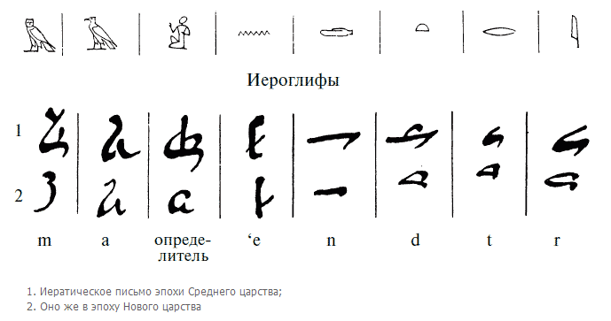
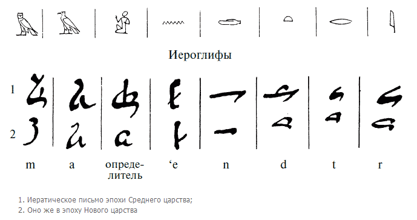
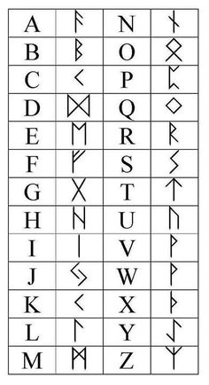
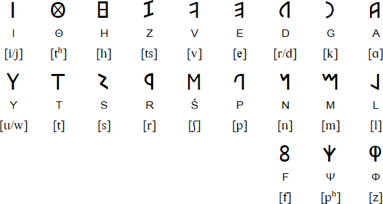

It can become volume Vl of the previous five: 0 1 2 3 4 5
but I thnk V is enough. V is Vinal. upd: don't forget, it is a draft, so it has more mistakes than books do)
from now on I'll work in my notebooks until I deliver something big enough
the preiveous volumes will probably be rehashed by topics when I finish my quest of dictionaries which can be understood not memorized.
ht oh I didn't know t is this littel. hijkl the claster with the longest letters. Three of them. Are tehy three mothers in this projection? hlk nu labial no labial
is h labial? I thought it was vowel. h is both labial and vowel.
Λabial is Vawial
UV!
IJ? j stands where labials are. but I want to use circular logic I think, explore this case
u y ij
hij
uv
yy
khijkl — l among i's
m is middle
n is new
no pq r/s tv
не покрась телик? хаха, хорошо что хаос не выстроился в апофению. спалился, хаус.
no is no, tv is tu, tu is ты and thee and thou and maybe even tho (though) but then thought too? thought could be thou ght where ght is related to ghost and co-gnito со-знаю
-to is a form of io, recognized in other languages as то (that) which is another of many examples of pronoun's reflexion (mirror changes left and right, so does this reflection to sides of the dialogue, разворачивает шахматную доску. т.е. не только лево-право, но и перед и зад (относительно полюсов (но не разворачивает ли она там полюса? ох как сложно, подумаю об этом как-нибудь потому (даже не в следующий раз)
I'ts funny how this volume writes itself, I had plan to close the project, but come on, it's what you ever wanted, but clicking the buttons damages my fingers.
There at 11:21 Adam Neely demonstrates how accents are about vowels.
(russian terms аканье и оканье also make it obvious; but this time it's in english)
here a couple of threads where somebody couldn't agree on that
https://www.fireden.net/sci/thread/11561546/ it's funny how I was the first to jump, but I wasn't op.
https://www.fireden.net/sci/thread/11600898/ of any of these
https://boards.4channel.org/sci/thread/11613560 but I participated in all three
and I think there was some youtube guru teaching foreign accents focusing solely on consonants and thus missing the point not being very good at foreign accents himself, even though he practiced not only what he preached, but unconsciously changing his vocalism to mimic the accent he didn't understood but somehow felt (or rather heard) but it probably was somewhere else, you'll find such examples yourself, because it being about vowels is still an unorthodox thought, even though it is correct.
those threads are where I found Adam Neely. great stuff.
a couple of other linguistic threads on the same resource:
these I didn't participate in:
https://yuki.la/sci/8987244
it's funny how predictable it is for being all chomsky chomsky schomsky schlomsky
PR works for sure, but in those upper threads we questioned for more than three times what is he so great about, nobody could reply, they just memorized his name the most, not even his ideas, thatnks gut


you may think it's a huge step back, a century back, but I just collect them all in one place thinking this alone will facilitate the further revelations. I could be right, I could be just psy0pt by количество переходящее в качество meme.
these tables are from Aryan Origins of Alphabet, the book expressing the abcd structure the most explicitly of them all:

so raw, yet they were so close, and even with knowing that magnificient sentence:
It was long ago noticed that in the Phœnician, Greek and Latin or Roman alphabets there is a repeated sequence of the letters as vowels, labials, gutturals and dentals. This sequence is well displayed by Professor Petrie, in arranging the letters on a square table like the old "Horn-book" board for teaching children their ABC.
It is interestign, that the son of professor Petrie worked in the field I mentioned before in the context of 231 gates: https://en.wikipedia.org/wiki/Petrie_polygon
внезапно:
Бафоме́т (лат. Baphometh, baffometi, окс. Bafometz) — имя сатанинского демона.
Впервые встречается в 1195 году в поэме трубадура Гаваудана как латинизированная форма имени «Мухаммед».
впрочем, есть и другие этимологии: https://vedaveta.livejournal.com/17603.html
забавно, что Алиестера Кроули ни там ни на вики не упомянают.
scientists (the true scientist, those who look for the truth) disrespect magicians as some retards or crooks. and they're correct about it most of the time. Some magicians are actually scientists, but level of scientific thought of Aliester was found by me rather law, and allow me to demonstrate why: he describes how he and his friend invoked some demon to help his friend go to India. And they thought the invocation failed, but rather soon his friend found an opportunity to go to India with some ship. It convinced Aliester that spirit doesn't have to show himself or herself or itself to oniself, themself, to magicians to grant their wish: maybe human sacrifices could make some spirit appear to try to make them stop: hindus say or buddhists say, I dont recognize usually who of them said what, that sufferings are self-inflicted by magi to make their wishes granted, but I think it grows from искусство требует жретв thing. жрецов? if I typoes жертв as жретв, то цре.. жрецов недалеко, вернее ещё ближе.
Я накурен как исследователю духов и положено быть, но я не уверен что я не копаюсь в своей голове сейчас, вернее в шее, ощущения идут от щеи, которую мы другом обрабатывали RSO в недостаточных количествах, что согласно одному исследованию может привести к распространению онкопроцессов, мы обрабатывали папилому, и я её пытаясь оторвать как резинкой запустил что-то от неё вовнутрь, я боюсь. Don't fuck with aliester, that's what they try to tell you. Whatever he did is not for everybody, the knowledge of sacrifices are not even in his book as far as I could see, some mentionings of that, yes, but don't I do the same? don't I mention this scary shit? This book is to be stoopeed right here and neer shown. Or this tabooed topic should resolve into as I caoll them plot-twist. Yes, we knw of all those deviations from healthy societal processes, btu
You knew people ate other people not only for survival, but often just for the hell of it: it didn't make you go and try it. Not yet, but not only because cops will get ya for that, they don't evin care sometimes: we have tens of thousands each ear missing so I heard. What meaning shifts could lead to ear reminding year: could it be crescent standing for a week, now standing for a month most of the time, even though a month is four different crescents: week = ухо? I don't know, but they're somewhat similar. I want my heat to held and body wiggled in amiotic liquid so my neck relaxes completely. But what if it will tear a muscle or two? how strongly or accurately are you supposed to wiggle your body and why. Just hold your head and let your body move freely. Now I just found a way of extracorporal stimulation of heart function by just rocking the capsule with embryonized man without placenta.
When placenta is on (or in) we have to work with placenta, just as woman probably pumps it with her lungs.
but I was speaking of cannibalism: I would be grossed out from eating most of the people, and to my surprise I notice that pretty women are preferrable: is it why cannibal societies are ugly like hell? children are also preferable, and not black child, they seem more dirty, but the whiter and prettier child is the more appealling it seem to be eaten (I know cannibals usually eat whoever they can get, but I know only few (from a tv) and only one of them ate hobos, others ate their younger girlfriend) Young are more pure, and that could be the reason (if this wishing hell can be called that) beyond pizzagate.
So white world is in some better hands, we try to have some good things and even though we (europeans) had our own autodaf***s and now it seems enemies opened the gates. Some jews seem to believe in their own myths and that is only natural that such jews want to take a revenge. Why did jews revolt? Because we didn't give them Jerusalem when we had it. We could expell all the arabs (and then we would be the bad guys) so we gave it to them to do the job, and oh they're doing. Arabs to arabia? What about palestinian arabs? They're palestinians? Some of them consider themselves palestinians and not arabs the same way I consider myself cyberian and not russian. Until Cyberia is in better hands, I will be considered russian by everyone around me. Even if Japan takes over (never gonna happen, not this far, we better don't blow this structure, because we'll have to fight for our right to be free from the fuckers of all sorts. Russian gangsters will openly take over and will become colonels and such, but military people are crazy. Do you think there are no crazies among gangsters? Who do I write it for? For myself first of all. Will I ever read it? When I have augmented intelligence and want to have a copy of 2020 me, I could you used (I was thinking of a form of could for the future it is here, and I unconsciously used you instead of u in used, so you is used for future? futurum it is, and will like this and у- [u-] as a russian prefix works to make a future form. You because imperative speaks about future? You'll do it = y'all do it. and here's a ling between will and all. use this слепок
But yea back to crowley and scientists: for them it would be classical apophenia and person building theories upon such a not only anecdotal, but outright weak evidence cannot be considered scientist. But are they right? The guy practiced magick successfully but isn't it all just magic? "spirits could be shouwn to ignorant audience in a smoke if a glass with a figurine of the spirit be placed before the only source of light in the dark room lighted only with the source of the smoke. And if the source is fire-less or fire is hidden, the impression could be incredibly bright. It's just my guess, I need to make an experiment to tell. Today public are more sofisticated and thus magic is placed under the k of knowledge of some abstract speculations and accidents are turned into miracles and some psychological element to it all is also present: imagine how bold is someone who overstepped the strongest taboos: a fighter tells me that your scream is different after you've beaten someone. Thanks for this forbidden knowledge, oh fighter, but I had to tell you off for some political reasons. We're related, so we'll see each other and renegotiate peace.
after you've beaten someone
after you're beaten by someone
just like s in
boy thinks
boys think
be or ve has to be there just once
have: beaten someone
are: beaten by someone
ha is are? it is in japanese.
and like russian -го is read like -во
japates -ha is read like -wa
- is optionary, orthography is arbitrary. so arbitrary that o can be a and visa versa:
 that
small round of ⓐ wasn't even place dthere by me, I found that
image as is to respond to the guy who told me of Bathomet's
etymology, who would know that it will come so handy, I only
wanted to place this weird image here before, just somewhere in
between of today's session, which began at bathomet really,
because why would I be high online. nah nah nah nah nah. but I
thought of not turning this book into funny pictures collection,
it's random enough, no need to make this side of the story even
worse. and now, this.
that
small round of ⓐ wasn't even place dthere by me, I found that
image as is to respond to the guy who told me of Bathomet's
etymology, who would know that it will come so handy, I only
wanted to place this weird image here before, just somewhere in
between of today's session, which began at bathomet really,
because why would I be high online. nah nah nah nah nah. but I
thought of not turning this book into funny pictures collection,
it's random enough, no need to make this side of the story even
worse. and now, this.A lighting in the rainless midnight sky at my right when I layed perpendicularly to my balcony across it on a table, and I said Ave. What are you saying? hm... Abe, отче. Ave maria is Father Maria thus? Was this meme completely ignorant? Father Mather it could be. If it's prechristian, Maria is mother, not only the name. Gratia Plena.
A M G is a good start. Domine Tecum, Ich keine.. Ich weiß es nicht (non lo so)
Ave Maria Gracia Domine? Could it be the order and plena was introduced for the melody?
or for the meaning, for Maria not being Domine.
I think I just reinvented крёстное знамение: прикоснувшись пальцами ко лбу, к сердцу, к левому плечу, правому плечу (плечо потому что на нём плачат? но когда крестился, думал о том что это руки) и заметил, что сделал это левой рукой, но столько органично это вышло, как никогда не уыбыло у меня. лёжа на пмяхком полу сделал это, вес был на правой руке чуть больше, но ведь и раньше заметил, что левая рука у сердца, зачем бы надевали кольцо на левую руку, если не была она священней, правая с разумом, левая с сердцем. Православные прямо в названии объявляют свою особенность орто-доксы орто скорей всего тоже of right словно до них делали по другому, и это сочетается с тем, что византийская империя, хоть и держала звание Рима дольше, "и тем трудней чем дольше" – это от недостатка фантазии у них же, всё за старое цеплялись. К тому что если эта христианская магия работает, то в странах под предводительством протестантов оно работает лучше всего, знать они правильно молятся. У католиков чуть похуже (папа и вся эта пиздабратия коррупционная, всё о власти миркой пекутся при том что мир во власти сатаны и кто они держащие власть в этом мире) у православных вообще всё швах. хуже только у муслимов, у которых где-то вровень с коммунистами, в Афганистане были и те и другие, разница не знаю, может им заметней чем со стороны. Если кто думает, что это вопрос дискуссионный, люди голосуют ногами однозначно в сторону протестантско-католических стран. Причины объяснять на этих страницах смысла нет: те кто не видят сами не читают подобные текста.
Left hand being more magical could explain muslimic tradition of not raising left hand: you have to greet friends with your right hand, keep the left hand for yourself: in islam you're supposed to wipe your arse with it. They take magic more seriously, they're more archaic (in reflection of Byzantine, but they're even further in the past) Sun comes every day, seasons come every year, to count longer periods, it seems natural to refer to some event as the reign of some king, as the event the most of laws depend on. As they did before mochamad in russian mocha is urine, that is where they immediately fail with russic nations, even though it's not obvious even to russic nations themselves, because they call mochammed mohamed (not ch, h, the same way englishmen pronounce it. Could english orthography be the bant working via russian?
But I came here to ask Could islam be made what it is today by english intelligence of Lourence for what you cannot stop lead. You cannot leave process in the neighbouring countries go by itself. Who know where it can lead them. May them work in accordance to our goals. The common goals, let us be the deciders of the fates. Who we? Those who speak english. But we all think differently and we all lead different ways. So be it, we have the advantage before those who don't: we have access to tens more of information they do. It gives unearned advantage to common public of brittich commonwealth. Just as latin gave such advantage to italians. Let's see how brits lead this world better than romani ever could. Gipsies pretend to be of both, Rome and Aegyptos. Big deal, евреи are of europe. Where are you from? I'm from here, there, everywhere.
Now I act as an asshole giving them shit. I'm sorry, I will learn to behave when it's based not on fear, but on comprehension of the etiquette.
гром не грянет мужи не перекрестится
это может быть формулой креститься при виде молнии.
будут еперь всегда это делать, но левойрукой. посмотри мчто из этого вырастит. пока левая рука доп. буквы назымает это правайя исполнила (левая крука сказала й, нот not я)
Про троеперстие это бредятина конечно, но прикольная, но бредятина, не лучше того что эзотерики исполняют. местами у меня наука, но чуть не половина (но меньше всё же, гораздо меньш) бредятина и оффтопик. оффтоп на странице приводит к тому, что она убирается с вершины стопки?
Сижу на балконе и крещусь на каждую молнию, стал суеверным. своеверным.
Слово суеверный = своеверный демонстрирует соотношения в котором находятся U & V:
У(U) = Во(Vo)
т.е. это в любом случае слоговая (глосовая) буква (глоссы = гласные? гласная дложно было в предыдущих скобках быть, но подсознанию надсознанию бессознанию виднее) бес is an abstract notion of bu- no u-(un- um-) i(il- ir- im - in-) a- all vowels seem to be no in inglish.
glish as glosses? голос?
(english is in-language? inside language? how did it happen that in- has these to different meanings, and в is showing it when it's v and в[v] is in in russian.
and n is also of the same form when it is in gree: ν
При очередной молнии почувствовал её аж в пальцах левой ноги, пошёл поклониться: открыв дверъ на моблокон балкон начал креститься и кланяться не разгибаясь, а сгибаясь всё ниже и ниже к груди, заметил что вывожу восьмёрку меж левым верхним и правым нижним углами.
начал сйчас тож делать правой рукой, но почувствовал что эта рука мутит, повторил пару восьёмрок левой и пришлё писать сюда, поюду снова помолюсь молнияюм
Удивился, что диавол в душе моей не возбухает, ведь я христианское в сущности богослужение совешаю, какое-то "еретическое" "герометическое" богуслужение совершаю. Но не сатанински ли я его совершаю, крестя себя правой рукой? хотел сказать левой рукой, но мопохоже что правою и впрямь сататниское, сетат state, senate, all are satans? if this world in the hands of the devil, they're and in christian faith it so is.
Похоже что я нашёл ритуал, устраивающий обе стороны классически символически представленные представителями якобы сидящими на моих плечах (понятно что это абстрактные понятия, которые раскидали по локосами, чтоб они не висели в воздухе забываясь массами тупорылыми) и я крестил же не титьки (хотя заметил в процессе что так делаю, исправившись заметил:) а плечи, и особенно если голова склонена, я увидел что вывожу кресты наподобие тех, что дирижёры обучены выводить:


Searching for these images I saw that there are different ways to do it, and the one I read in some book in dutch was more stretched left to right along a symmetic cross with long horisontal line and short vertical line. Didn't even find it, lol, it was similar to the second one. only the line 2 to 3 was straighter. and probably went in another direction (probably that I remember wrong) something similar to the top central one in this one, something in between it was, nevermind, why don't I weed this lyrics out!

означает это что дирижёр изначально музыкантов благословлял? музыкальная традиция определённо прошла через христианскую школу, однозначно это христианские влияния.
но кресты же не христиане изобрели? но едва ли поставить крест на ком-то было чем-то хорошим до них. crossed cursed? анафеме христиане склонны предавать.
I told before that axioms can be proven from their definitions (so definitions are new axioms) and recently somebody at 4chan has proven that parallel lines don't cross: somethin like x + 3 = x - 5 by building the graphs for y = x + 3 and y = x - 5 to demonstrate that they'rre parallel and this algebraic representation translates that axiom into a more simple unequality of different numbers (numbers that are at some non-zero distance from each other)
and this difference has something to do with music theory, notes in the chord are at some distance from one another. Pythagoras worked with both music and math, and probably some mythes are invented by him, who knows. Muthic. Muzh, probably mistransliterated as Vir.
v reminds ν which is n which is next to the m and probably it's cognate.
i reminds ו which is у, u, oo ii ?
positionally it is v or even f (v is read as f in german) because it's f in latin. and F (or W?) was in greek so they say, I don't remember this.
neglet ~ не глядя

ת in the group of אמש (in the form of the conductor's cross) supports the hypothesis that אמת is the three. Or is אמשת the four? Google's translator recognizes this four as "last night" in hebrew and as "person" in yiddish.
That image is from sefer Yetzirah and I still didn't read it, can you believe it! Too much weed to read.
Today I found a book from a guy I follow at academia.edu where he speaks that ogham is ancient. It is of 12 years ago, could it influence my "and ogham is the origin of it"? because I saw that coin before and cannot find it anywhere else.
https://www.academia.edu/4134903/Proto-Ogham is the link
there he massively resonates with my revelations: "Hibernian" he uses make me think of Iberian (hibernian is irish) Irish lore-ish? nah, too baseless yet. and he follows delivering with Celtiberian scripts. He only places it next to the term Coelbrenni which leads to some forgers of runes (and I will probably demonstrate their pre-Tolkien infusions into body of runic scripts but not today) and another new word is glozelian, but so far it only lead me to some obscure research I copied a couple of images from (they're clickable to that page)


Some enormous ammounts of literature about writing systems there are it may take me forever, but I must have all the time in the world, once I develop my capsule for living in artificial amniotic fluid.
But don't I know that each year every field produces more new knowledge than a specialist would be able to read in a hundred years? And this is probably the first example of information singularity, for they say future is already here, it's only not equally distributed. As it should.
Now it's time to do something I had to make in vol.1: Compare those paleohispanic scripts together with celtiberian, the most widely used form of them all.

Smaller forms in black in the right bottom corners of some iberian are taken from ancientscripts.com which is currently down oh why didn't I use teleport pro or something of the kind to mirror all that site for moments like this, gush!
As you can see, the researchers disagree on which form is voiced and which is voiceless and which form is stroked and which is not, though I don't know the difference between them either. And as for that voiced and voiceless thing, I'd go with additional stroke making it stronger, voiced, because that is how G is different from C, and this very feature make paleohispanic scripts related to runes (if the common forms were not enough) and runes have the same confusion: ᚴ is ofteh attributed to G, which makes sens, because it looks pretty much like Г (but Г stands at the position of C) and ᚵ is often considered to be K (which also makes sense, because K is different from ᚴ by being one stroke bigger, but I made it the other way around (probably being in the wrong, who knows - write me if you do) because I didn't see the dot on neither of ᚴ's of bornholm alphabetic stone (probably because it was marked by paint) so I allowed myself to feel free to make it my way. Time will show, maybe it will show that this disagreement is ancient and dialectal, because both C & G used to be the same letter.
also something wicked is in the term I never saw before:
Hesperia, ancient Greek name for the Italian Peninsula
Hesperia, ancient Roman name for the Iberian Peninsula
As if the Hisperian nation used to control Italian peninsula, but was forced to leave it for the Western territories. But it's just a guess, based on these two lines from wiki. ce n'est pas sérieux, mais c'est moi.
and a more simple form of Iberian scripts:
Northern Iberian script:

Southern Iberian script:
and of course I am clueless about how reliable these transliterations are. Remember futhark? heh.
This paleohispanic script has more archaic features than greek, thus greek historians distorted reality for political reasons. It's more archaic before we can recognize much more of archaic greek, thus greek is more modern, latin is actually modern for past 2000 years or so. So it's some roman летоисчесление.
I will try to retransliterate paleohispanic the same way I did with futhark. I yet have to try to read runic text in retransliterated futhark. f for a, just as in Hesperian. הSpearian?
everything will be fire
image with this was to appear here, but I though what about the copyrighted images? I have plenty already probably (even though I took it from the common internet) so why do I care? Because I will h
Я сейчас повторял свою мысль которую подумал о копирайте, но я останавливаю этим ход мысли, чтоб записать старую мысль, я мог бы дойти гораздо дальше если бы не парился графоманией. Законы о копирайте - законы заради жадных людей (для радости жадин, жыд) в то время как кто-то здесь посвящает всю свою жизнь общей пользе, продвижению науки. Зачем нам палеография? Человечество хочет всё знать, хотя бы за этим. Но и затем чтоб понимать языки, а не зубрить их. В том смысле что законы о копирайте нужно пересмотреть, а пока пересматриваем - отменить, потому что от них больше вреда чем пользы (но кому-то очень много пользы, постоянный интерес с неплохими доходми и несуществующей ответственностью, нет законов против того чтоб так закон начальственно вертеть. И я позволяю себе вертануть его со страниц этого необычного издания. Я его отменяю, создаю общественное мнение, под которые законåм принято подстраиваться. Но вернёмся к испанскому письму, На которое может испанский язык перейдёт как на руны переходят язычники севера.
Язычники без губных? Без М какой-то палевоиспансий.
There seem to be no unicode for paleohispanic yet, so I use similar letters explaining when needed:
А Р R D all these å-liny can be read in hisparic P (officially transliterated as A)
E looks like both o and ه) ه is at position of e alright, but it's a in tifinagh, and it's similar to e...
gosh, my head boyl, don't touch forms you don't recognize, just notice that the giants on whose shoulders I stand (the kids who discovered all those scripts) recognize them as forms I recognize. I recognized it as o, but if it's really e (they read some texts) then ه
E in northern Iberia is closer to the one we all know. So ه is in accord with tifinagh ⴰ which s porobably not a but э? First in Africa, second in Europe.
Tifinagh has ⴰ [A] (for africa?) first, and second is ⵓ [U], and here it is together with ogham.
amazigh tifinagh & ogham
E is a stroked through U: ⴻ (notice how much ⴻ reminds E) notice = see. notice and edit.
big A is R: big ⴰ is ⵔ
ⴰⴱⴲⴳⴴⴵ абвггг - почти как в русском (в греческом такого нет) русское Ж оно и ᚼ и ⵣ. и ⴴ?
Тифинаг идёт в алфавитном порядке, собирая все инфарианты букв в строку:
ⴰ ⴱⴲ ⴳ ⴴ ⴵ ⴶ ⴷ ⴸ ⴹ ⴺ
а б в г гж г гж д дз д дз (всё это очень приблизительно, используйте аудио-букварь)
ⴻ ⴼ ⴽ ⴾ ⴿ ⵀ ⵁ ⵂ ⵃ both F (in the form of H) and Fita (this time not tet but het, as in japanese)
е f k k kh h/b h h h and H ends this line as in latin, same tradition, this tradition is odder, older.
ⵄ ⵅ ⵆ ⵇ ⵈ
i kh kh q q
ⵉⵊⵋⵌⵍ ⵎ ⵏ ⵐ ⵑ
i j j z l m n ɲ ŋ
ⵒ ⵓ ⵔ ⵕ ⵖ ⵗ ⵘ ⵙⵚ ⵛ ⵜ ⵝ ⵞⵟ
p oo(u) r ṛ(rˤ) ɣ ɣ ɣ(ʒ) s sˤ ʃ t t(θ̠) ч tˤ
ⵠⵡ ⵢ ⵣⵤ ⵥ
v w j(y) z z ẓ(dz(zˤ))
ⵦ ⵧ ⵯ ⵰ ⵿
e o w separator joiner
this tradition is not necessary more ancient, because it doesn't have as many archaic features as paleohispanic (which not only demonstrates many long obsolete forms, some half-mythical forms like M being san, I finally found it, I found this san, it could be in some semitic, as they make me think, but I met it here, in Celtiberian, and I still think it could be mistransliterated: какая ещё матерь шматерь шатер твой матерь, страшно? а ты думал. материя скатерть. молоко халава. миска сиска. мочь can may can? son can. doщь немощь. мощь мощины мосцины мысцы мышцы мясцы. y is both ю and az
az, Z is Я. яЗык, яЗвук, яЗнак,
this tradition is not more ancient, it's the same period as greek and latin, Berberians fought Romans, not nations before them, yet before them they occupied Iberia:

ⴰⴱⴲⴳⴴⴵⴶⴷⴸⴹⴺⴻⴼⴽⴾⴿⵀⵁⵂⵃⵄⵅⵆⵇⵈⵉⵊⵋⵌⵍⵎⵏⵐⵑⵒⵓⵔⵕⵖⵗⵘⵙⵚⵛⵜⵝⵞⵟⵠⵡⵢⵣⵤⵥⵦⵧ⵰ ⵿ ⵯ
If this order is correct (for it could be a mistake of some professor who placed ⵒ before ⵓ, but if it's authentic, then it is one of the most mutilated alphabets I know so far (not as much as armenian, but even more than russian)
So to be sure, I began looking for such canon in some images, not just wiki. The most similar I found is more simple, but repeats that larger sequence:

ⴰ ⴱ ⴳ ⴳⵯ ⴷ ⴹ
a b g gw d d
ⴻ ⴼ ⴽ ⴽⵯ ⵀ ⵃ
е f k kw h/b h
ⵄ ⵅ ⵇ
i kh q
ⵉⵊ ⵍ ⵎ ⵏ
i j l m n
ⵓ ⵔ ⵕ ⵖ ⵙⵚ ⵛ ⵜ ⵟ ⵡ
u r ṛ(rˤ) ɣ s sˤ ʃ t tˤ w
No labial before vowel this time. The last line follows the last line of bornholm alphabet in a way. In the way of R (some would say ᚱᛣ is double R too, but that's not for sure: ⵖ the ɣ is more likely to be the cognate of ᛣ) and then three S's reflect ᛋ, two T's reflect ᛏ and W to reflect ᚢ
Whatever is the story beyond R instead of P, it is now less peculiar, because two writing systems go this way, and Tifinagh tradition probably never broke, so it can be the better source for the discovery.
But I really have to focus on my immortality capsule or I am going to die преждевременно.
Here I compre "Greco-Iberian" to other Iberian scripts, and I found it to be not Iberian at all:

Surprisingly, it seems only Δ and Λ have exact match, the next similar is Α
which makes Α Δ Λ the basis, which make me suspect that Δ used to be instead of B, which would explain the similarity of b & d and deda for mama in georgian. But let's keep on watching it, it's too early to make such conclusions. It easily can be something else. Γ/K have forms even more similar than A, thus it's Α Δ Γ Λ, a form of S similar to ᛋ and maybe N which could be a form of ᛋ herself. especially because some S's look like M which is confused with N all the time (here western celtiberian M is N in other iberians, I spoke about m/n invariance before and I will collect it when I sort these drafts out. мы/нас, nos, us, in/im,
d g l s are al similar to c. could a be a form of c too? if d is staved c, than a is staved c too, or a double c
could it be A in the form of V or Λ because it was just vowel, and ᚲ or < for consonant and согласная?
Λ and V for up and down (higher and lower)
< and > for more or less? In the force or in the direction of the flow?
К is "to" in russian S is "off" (ot in russian) as two forms of C (ᛃ)
The three Fates created the first five vowels of the alphabet and the letters B and T. It is said that Palamedes, son of Nauplius invented the remaining eleven consonants. Then Hermes reduced these sounds to characters, showing wedge shapes because cranes fly in wedge formation and then carried the system from Greece to Egypt*. This was the Pelasgian alphabet, which Cadmus had later brought to Boeotia, then Evander of Arcadia, a Pelasgian, introduced into Italy, where his mother, Carmenta, formed the familiar fifteen characters of the Latin alphabet. Other consonants have since been added to the Greek alphabet. Alpha was the first of eighteen letters, because alphe means honor, and alphainein is to invent.[9]
I trust Hyginus' account the most, because it describes the structure of the alphabet, thus he knows more, and he keeps on in consistency to what I found: palamedes invented both, 11 (additional to 7) letters and dice at the same time, and 18 is divided into three dice perfectly. And only then have Hermes simplified images to symbols of letters, and Cadmus, only after that system got to Egypt, brought it to Beotia, where his mother (who probably knew that one slot was to be empty, for pre-Palamedian dice could be blue for B & red for T and only count vowels. That would correspond with knucklebones having on.y four numbers and cubic dice could become necessary when additional letter appeared. 15 is also a very interesting number, because if there are 5 vowels, it gives 3 forms of syllables or three matters of alphabet: whether ABC, vowel labial lingual; or BCD, labial velar coronal of paleohispanic syllabary.
is it anohter reason of whay a reminds d so much?
But I return to all that just to introduce Pelasgian Alphabet: I thought it was unknown, but this image from who knows where (I made it clickable but it doesn't lead far) tells some alphabet similar to Etrurian (sc = R?) is exactly Pelasgian, who knows..

Is it from some ancient book where phoenician looked like something completely different from what it looks like in between 20th and 21th centuries? (it's 2020 to be precise) and where is this page even from? Is it just some freakery? Is the author of it just ignorant. Very unlikely. I have asked the question, I will look into phoenician writings when I... aye aye aye

To my surprise I accidentally placed different ammount of consonants around the third vowel, but it's just okay, because of doubling of z in that vowel's line tells that that someone's mistake just neutralizes mine. But even though I'm not sure if this axial symmetry is even a thing (because I still never read about it, never met a writ, a word about it) and the doubling of ᚴ as ᚵ (even though I didn't see that dot on that artefact) didn't confuse me. But now it makes me think: doesn't this doubling allow ᚢ to be U and not V (as my axial symmetry tells) eh? and it does, but such axial symmetry still looks kinda wrong, so I'd better discard that hypothesis of its ever being known completely so I just discarded that modified image instead.
But the question of sabaean remains. I never researched it properly, I maybe will.
But I've been wrong again: that alphabet is right to left, thus the letter from the axial-y-line (axial-i-line to be precise) it's not y, it's i (it's shortened probably due to arabic influence. Did arabs preserved phonetic values of vowels? They pronounce vowels very well, their nashids are
So the only way to lay sabaean into axial is by removing one of z's and it will be still not that pretty:
(chances of that was 50% so not that impressive, or was it 100%? for otherwise I wouldn't cut off 𐩼)
𐩠 𐩡 𐩢 𐩣 𐩤 𐩥 𐩦 𐩧 𐩨 𐩩 𐩪 𐩫 𐩬 𐩭 𐩮 𐩯 𐩰 𐩱 𐩲 𐩳 𐩴 𐩵 𐩶 𐩷 𐩸 𐩹 𐩺 𐩻 𐩼 𐩽 𐩾 𐩿
It is halaham! but let's arrange this mess by order:
I didn't know where to place 𐩼 so I found another source of information, and it surprised:

𐩱 𐩨 𐩴 𐩵 𐩹 𐩠 𐩥 𐩸 𐩢 𐩭 𐩷 𐩼 𐩺 𐩫 𐩡 𐩣 𐩬 𐩪 𐩲 𐩶 𐩰 𐩮 𐩳 𐩤 𐩧 𐩦 𐩩 𐩻 (𐩯 𐩽 𐩾 𐩿)
but let's combine it as the previous image did:
(𐩳 𐩽 𐩾 𐩿) 𐩱 𐩨 𐩴 𐩵 𐩠 𐩭 𐩥 𐩸 𐩢 𐩷 𐩺 𐩫 𐩡 𐩣 𐩹 𐩬 𐩼 𐩪 𐩦 𐩯 𐩼 𐩲 𐩰 𐩮 𐩤 𐩧 𐩻 𐩶 𐩩
(it places 𐩹 at the fifth position, where in the previously found order it is at 15th.)
So I challenge both the abecedaries: they're further from grace then the modern counterparts of them:
in comparative chart some g is between o & p,
and in previous chart o & p together but kh is between e & f.
Was it some creativity of archeologists or some sobaean mashtots-like reformer? I doubt it, priests in that period had to know the structures.
and now it's more obvious what is halaham:
𐩠 𐩡 𐩢 𐩣 𐩤 𐩥 𐩦 𐩧 𐩨 𐩩 𐩪 𐩫 𐩬 𐩭 𐩮 𐩯 𐩰 𐩱 𐩲 𐩳 𐩴 𐩵 𐩶 𐩷 𐩸 𐩹 𐩺 𐩻 𐩼 𐩽 𐩾 𐩿
Comparison to the alphabetic order allows me to colour halaham and it becomes obvious, that it's some prayer, because it is: הלחמ and I thought it was Elohim, but google's dictionary tells it's Bread. And it correlates with Jesus calling bread his godly flesh. Хлеб всему голова? В начале хлеб родил небо и землю (хляби? манна небесная?)
God is אלוהים.
I don't recognize this order or if it is an order at all (it's clickable, so figure it out by yourself)
another sabaean abecedary independently came to me from Hans Richter when we discussed ugaritic:

some doubts had I about hieratic, so I looked other sources and they said "maybe"
 
And in that letter about ugaritic these images from “The Story of Writing” by Andrew Robinson:

But I'm still sceptical about those additional ugaritic letters, and I'm gonna be sceptical until I see the actual artefact from which that copy is alegedly made.
That guy is my great friend now, technically penpal, but pal nevertheless.
He asks me if I read Die Ssabier und der Ssabismus by Danīil Avraamovich Khvolʹson and I haven't even heard about that man, so I sent him this text which can be an interesting chapter of this book, so I don't have to repeat what I told him about what I discovered as I wrote the letter actually:
I haven't even heard about that scientist, and unfortunately I still don't read German, but I will check the pictures.
I was looking into Sabaean yesterday, and comparing halaham canon to abecedaries, I got a guess that the canon could be some prayer (or a spell) because the first h is transliterated as ה which position is that of E:
𐩠 𐩡 𐩢 𐩣 𐩤 𐩥 𐩦 𐩧 𐩨 𐩩 𐩪 𐩫 𐩬 𐩭 𐩮 𐩯 𐩰 𐩱 𐩲 𐩳 𐩴 𐩵 𐩶 𐩷 𐩸 𐩹 𐩺 𐩻 𐩼 𐩽 𐩾 𐩿
𐩱 𐩨 𐩴 𐩵 𐩹 𐩠 𐩥 𐩸 𐩢 𐩭 𐩷 𐩼 𐩺 𐩫 𐩡 𐩣 𐩬 𐩪 𐩲 𐩶 𐩰 𐩮 𐩳 𐩤 𐩧 𐩦 𐩩 𐩻 (𐩯 𐩽 𐩾 𐩿)
(𐩳 𐩽 𐩾 𐩿) 𐩱 𐩨 𐩴 𐩵 𐩠 𐩭 𐩥 𐩸 𐩢 𐩷 𐩺 𐩫 𐩡 𐩣 𐩹 𐩬 𐩼 𐩪 𐩦 𐩯 𐩼 𐩲 𐩰 𐩮 𐩤 𐩧 𐩻 𐩶 𐩩
but only Elohim is אלוהים and הלחם is "the bread" (which makes me think about Jesus calling bread his divine flesh, and there's a proverb in Russian "хлеб всему голова" (bread is head to everything) and heavenly abyss is named хляби (hlyabi) in old-russian (native russian speakers usually hardly know what it means (they (just as me) would only say that it's a sky, but if we only know it in the context of "хляби небесные" then it's heavenly sky. or if that is what opened up before the Deluge, could people think of clouds as of bread? the most similar word to hlyabi is хлеб [hleb] (bread, hlaef) and manna is thought of as semolina (манна & манная каша & манка) it all could be just nothing and volk-etimologie, but https://classes.ru/all-russian/russian-dictionary-Vasmer-term-15007.htm also doesn't really know where that word comes from, but gives an old form (literally хлеб) and for whatever reason connects it to Middle High German slamp (they translate it as feast) and Dutch slemp (which they translate as "tasty food") and another meaning of word хляби is liquid filth, which could be linked to batter and porridge (kasha)
Since you like looking for god's names in abecedaries, I felt like sharing this.
also the final letters of Ugaritic alphabet can be read as Tius (but I'm sure about it even less than about that the-lehem, because lehem for hemel looks very likely if saying that moon is made of cheese is of ancient origin. Ancient people could get lsd-trips from time to time because of ergot, and bread again being white next to black ergot growing like a snake out of ear(oor) I wonder why you call it so, in russian we destinguish colos from colossus but it's close to spike, not ear or is it as a rabbit's ear?) that could be real good and evil tree because some powerful evil it could cause: gangrene because of vessels spasm. And wish to grow ergot for sorcery could be a reason for witchhunt whence "spoiling the crop" would be not such a baseless occusation. War on drugs is the continuation of the witch-hunt.)
Take your time.
---
okay, the letter ended there. no have a nice day or all the best, I'm such a хам cad lout twerp tyke tike mucker and a very rude you man I wanted to write young, but my fingers disobeyed to that lie. 45 is new 25 isn't it? with all the technologies I have more time than before. Отказ от тяжёлой работы и алкоголя творит чудеса как сказал кто-то, я добавлю что женщин тоже надо избегать (у меня седые волосы полезли когда позволил женщине остаться когда хотел выгнать (дважды) но дал три попытки зачем-то) но я аутист, может это правило менее важно.
I have to stop smoking weed and I will figure out how to make something big since I don't work in language when I am not high. I write down some occasional findings, but they're not work, they're 20 times less intensive.
---
I wanted to show you ergot but you check it out yourself. It's rather scary.
(and I went offline to start book on magic, explaining superstitions with actual reasons beyond the hund: imagine in today world if gipsy witches taught your children smoke weed and drink witchy wine)
The specific sign 𐩪 is S in Sabaean, and ⵄ is I in Tifinagh. (a sign similar to I was used for Z long ago)
a couple of similar signs are vowel in Sabaean: 𐩱 & 𐩠 are E & A
Okay, this one is still raw, but If you only knew what have found in my notebook tonight!
It's in london copybook (the serie after american public transport serie which was after fish serie)
Voiced Sonor Voiceless as three mothers (in russian Voiceless is just deaf, and that is the old mother)
ABGD (because they say that C was voiced when C and G was the same letter (some long ago))
IMLN (l is probably lingual click, imitating horse, because Ma is also horse, and No is Go for horse)
OPST (because Q is not met in the most of alphabets, because R is Р in russian, `cause ᚱ is probably П)
IMLN is probably IMKN (but then k is not sonor, and L is similar to Г like λ is similar to ג)
because If H is И then HIJKL is the same И claster, and LMN is IMN.
So that velar column is all freaky and uncertain, and it becomes much better if we only keep less ambiguous letters:
ABD
IMN (but if M =N, then IML, which pretty much contradicts what I just said about I = L, but if M = N then isn't N = И = H first because 'n' of and is и and second because N is Н in russian and И used to be written as H in old-russian)
OPT
ABD
ИMN
OPT
Just as sefer Yetzirah mentions only water of lips and fire of tongues (and air for vowels is not in the jewish text, only in translations. I'd say vowels are solids, as land in Африка, Ивропа, Остия
I thought I was India, because it promotes K in indian fashion.
E was Europe. But only when there was E. When there's only I it's Iberia or some other Europe.
Now I have no reason to think of O as of asian line, because who in the Ost passes labies first?
AMT is read by diagonal, the truth. AMS could also go by that diagonal, if S was the other silent, but before C appeared there could be no S, so I think. only Ш maybe& Ш & Ⰿ-like T of upside down Ш.
I only saw final Z, not final S, so I go with final T. The Truth (sefer yetzirah mentions that three mothers is a great mistery, so don't expect it to be too open.
After all there's no third element, only B & T, and AMT could be left to be figured out by someone who actually knows hebrew (I actually don't, but I still managed to figure it out because of how accessible thee extra-cortex of the internet-powered linguistic information. Language science, but linguistic for its adjective. I will reconquer linguistics from chomskians. Somebody deliver genetic therapies to that dnst3-tortured tribe!
И МНЕ.
𐎀 𐎁 𐎂 𐎃 𐎄 𐎅 𐎆 𐎇 𐎈 𐎉 𐎊 𐎋 𐎌 𐎍 𐎎 𐎏 𐎐 𐎑 𐎒 𐎓 𐎔 𐎕 𐎖 𐎗 𐎘 𐎙 𐎚 𐎛 𐎜 𐎝 𐎟
a word about halaham (the lehem, bread) is that if хляби is related to хлюпать, что может и к еде относится (хлюпают вкусной нямкой) и к грязи: а жидкая грязь также может быть названа bog, and bog (Б-г) is god (Г-д) in russian.
Is it related to the first scientist, Thales of Miletus, speaking of Water as the basis of everything?
historically recognized as the first individual in Western civilization known to have entertained and engaged in scientific philosophy.[3][4]
Maim is literally plural Ma (im is plural suffix, and though today it is only used for male words, I heard from my teacher that it was not always the case)
Шамаим огненная вода? а эрэц тогда закусь?
кровь и плоть? вино и хлеб?
жидкое и твёрдое, инь и ян, тёмное и светлое, холодное и тёплое, х & т? т как тётя, Ⰿ-like mama?
Ⰿ is glagolythic m, х как хер, her, but they say t was written this way, but could x be z? could x be h? could it's h-ness cause thought of vowel in the end (which was accepted in archaic rome, in runic alphabet, in greece, in russia — greece, russia and some scandinavian alphabets are those who follow this tradition. Others place new vowels next to their original forms, and semites even began beliving that they don't have vowels at all (or they're only teaching so)
But I don't know how your browser shows Ⰿ (because here in mine it is similar to Mc'Donald's logo, a large m, but the same unicode can be recognized as I learned it before unicode made the mess: four balls at the ends of K rotated 90 degrees clockwise. in the same style with other letters.
If I was a master knitter I would learnt to knit by wool but I don't have passion for нитьting.
sewing is also from chinese or/and japanese shi-ito (or only shi, 线)
A wiked manner of japanese to draw letters. Look a g, they know it's from c, a form of c

it is clickable, but procede on your own risk: it could be filmed directly from brains and cleaned by ai, either way it is a work of art, and it is potentially dangerous in some form, just my spooks (испуги, с пуками) at least it looks this way, a masterpiece
三つ編み mitsuami - косички (braids)
I thought mitsu is water and it is also three. Is it why mem is triple? 𓈖 three mothers is it them?
Klotho is the protein
No insecuity lines.
Some random linguistic images follow just because I sort my saved images again:


the random stopped here because I think I know what that tetrahedron can be.
A protodie:
I'e bbeen promising to put this project on hiatus for some time now, but I'm mouthful of thc-powered smoke again. So weed is a drug, because this habit controls my action stronger than intellect, or with the same power: it has to rationalize the smoking, so I have to work on the intellectual level to give up weed. How it rationalizes it today: I don't have anything else coming my way anyway (false!) and I haven't finished here yet (true!) the first one is referring to no arranged meetings for today, no even money to start building my apartment to motivate the investors to fund me further, and I spent the funds I kept for materials on weed instead. (true)
The lie's found. He has to look for new contracts as my mom told me about my brother who drinks (and it's also a druggie habit) I must look for new contracts. I must make science, not business.
This is the main argument. I don't want to work with my hands either (I use them to type, traumas are especially unwanted) I have to hire professionals, so we work from other sides of the professional spectres. arts and technologies.
I also should be shaman. So I will be bearded and hairy and high. I wear and bear hair. bear'd is haired.
Science is service. Business can be service too, but it's another kind of service, serving the clients, not the truth alone.
Is it weed still convincing me to keep on smoking it? Oh snake, the jesus, lucifer, prometheus.
Thank you for bringing light to that diy-pipe alright.
First I convinced me to work on this field instead of medicine because I thought I'm close to the break-through, after which they will recognize me and I can make contacts with truer biologists than myself.
It came out that academic public is fucking clueless and not even interested (they're not interesting them selves too) so I only met a couple of researchers on the field I'm currently in. Others remain clueless, but these two at least see the axial symmetry (one of them sees it more clearly, the other is more educated, but both of them are not professional linguists, just like I am also not by academic standarts: nobody pays me for my work but my Mäzen.
some more random images are coming your way.:


I will remove these four once(whence) I find a better scan.
random flow goes in series.

and the same in finer detail:


I keep on correspondance with Hans R. (aka Joannes Richter)
and he sends me Flinders Petrie's book The Formation Of The Alphabet, which I have downloaded over a month ago and never read and utterly forgot it so I asked him to send it to me.
Incredibly embarrassing. so I mirror here, and the paragraph he told me to pay attention to in the context of discussion we had. (a mirror for the booklet)

I sent a letter to J. Richter today, you may find it interestign too:
Why do you set apart L & R, when they're one above the other?
Do you know there are more than one form of R: russians (and maybe scottish too) pronounce it at the same position L is, only vibrating by the tip of the tongue, so their R (or Р, that's how russians draw it, their P is П, that's a greek thing) while brits (and maybe french too) pronounce it by uvula - you don't even have uvulars in your table.
Now, about that table: always count what was the chance of the position of the letter at that very spot: If you see how often labials follow vowels in english alphabet, you'll see that the answer is up to 80%, which does seem like a systemic (if you count Y in, it's 2/3 which is not that impressive, but still more than a half)
It doesn't make sense to count another colum, if only one letter in that column: it could have standed anywhere and you'd see the same system in that case: you'd just place that column somewhere else.
Recognize word apophenia and make your best to be sure that you're not following some false structures.
Those additional letters in ugaritic is probably what made me say in that up to 20 years old piece of draft that more ancient writing systems don't follow this structure as well as modern english latin: how can we even be sure that the ugaritic abecedary is authentic. It supports Vowel-Labial-Linguals order not worse than others: only M i not in its place. But all the other columns (the distinct velar-coronal in english latin - and only there! is it one of reasons (or consequences) that the commonwealth rules the world?) all the other columns are a mess of linguals (just as the myth tells: 5 vowels, b & t (neither K nor R, these are of later origin, together with h maybe, but the chronology of appearing of different letters is yet to be destinguished: no historic source will tell about: ugaritic abecedaries are on the verge of what is found and they're already complicated so much, that they're even further from the source-code than some alphabets used up-to-this day (maybe the final triliteral row is built upon canon and not expanded yet, that is what makes it even more interesting (together with runic alphabet stone from Bornholm, which preserved the first raw in the form of ᛆᛒᚦ, where ᚦ is both Г&D, or B is both b&c, which is less likely, but who knows, I know few reasons of why velars could be born not by linguals, but by labials: mama is kaka in japanese, not labials but velars are the first consonants in eastern alphabets and syllabaries, c is graphically not that far from ᛒ, japanese p,f,b are made by diacritizing h, russians pronounce suffix -го (go) as -во (vo)
But of course d has even more reasons to be the father: c is staveless d, ᚦ looks like г which looks like r, which is р in greek and russian, both are lingual - that is first of all, g is d in russian cursive,
so now, writing this letter, I realize once again, that both B & D are parents to C: C as in child, ko in japanese, -ъk in russian, Жили-Были Дед-да-Баба, родился у них Coloboc.
I used italic (almost cursive) and it's less of cursive than cursive: only few letters are cursive:
a & a, g & g, maybe v & v are the only ones redrawn, others are only inclined:
abcdefghijklmnopqrstuvwxyz
abcdefghijklmnopqrstuvwxyz
ABCDEFGHIJKLMNOPQRSTUVWXYZ
ABCDEFGHIJKLMNOPQRSTUVWXYZ
It's especially good I used italic here, beause the font I use in gmail has g like it is in italic:
g is d in russian cursive
g is d.. is not correct, this form is never used in russian. only
g, and with the swash too, is d in russian cursive. but
not italic: д is another form of russian д. both g
& д are d in russian (Дд) it is weird. it's almost as if
both forms are ᚦ. and Д is as if it' ᚦ rotated counterclockwise. I noticed before that d is Д rotated counterclockwise. And as clockwise is the lucky direction, russians (and greeks?) took it from the west (as we ajlmonst always do, to be honest) and runic nations took it from us. But if it's not a charm, but a curse from an opressor (force nation to draw deus-letters cotated more open.. is it more open? no, close is clockwise because it's lucky to keep tubes shut.
If reforms for whatever reason rotated letters counter-clockwise, did it open them? or was it some grammatic magic to oppress? either way, in this case russians took from normans and sent it to rome. Which is counter-intuitive, counter-historic, and why wouldn't grammarians of the nation (and neighbouring nations too, allies are always around) noticed that "one way is delight, the other is not, some naught" -- it's some ancient, magical, that I didn't even dare to leave here the original spelling of the spell, you can google it about 231 gates by yourself. I probably mentioned it openly before, but now I grew more sensitive to these matters.
symmetry
bd
pq
shows
equivalence of linguals (even velar and coronals can reflect
eachother as voiced and whispered forms)
minuscule
is kinda tabooed: they teach that it appeared only in middle
ages, forgetting to mention that they speek about greek
minuscule here. Roman Cursive is basically minuscule, and its
history is deep. Even the word cursive is scary.
But
modern cursive forms don't reflect eachother, b reflects g, p
reflects.. j maybe? I'm sorry I'm thinking while I write.
I am going to send these 7lines to my friend Hans, just archive it here for both legal and scientific reasons (some information in this text can be new, and thus it can have interest from the scientific pov.
so I procede:
One
russian guy (probably even from my own city) noticed that voiced
consonants are grouped in the beginning of the alphabet, while
voiceless ones are at the end of it (it only happens in russian
alphabet, afaik, but I was also told that C sounded like G when
the C & G wasn't divided - but it's still a hearsay for me,
I cannot read those ancient texts, I haven't even looked into
this corridor of this not-a-rabbit-hole)
абвгдеёжзийклмнопрстуфхцчшщъыьэюя
even though it's my simplification, he also noticed sonors between them:
абвгдеёжзийклмнопрстуфхцчшщъыьэюя
even though it's my simplification, he also noticed sonors between them:
абвгдеёжзийклмнопрстуфхцчшщъыьэюя
Both
B&T of the myth "The Three Fates or, some say, Io the sister
of Phoroneus, invented five vowels of the first alphabet, and
the consonants B and T" and this BDPQ-symmetry seem to confirm
the applicability of this principle.
this voiced-voiceless thing is so native to me, that I will not be surprised if it's one of my earlier revelations, I had something this big and then I just forgot it, I only remember that it was something big in the alphabet, and I don't remember noticing the rhyme of the lines until adolescence when I got something to do with военкомат. I know it sounds weird, but this guy lives in my city, what were the chances, but I will know of this only if I meet him and he admits that we learnt at the same school. If he's my age, it's whether I told him that or he told me this (is it possible? I don't remember anybody but me knowing of that what I noticed, otherwise I would at least think of asking whoever told me of that, and I also felt like feeling it, not really understanding, or I would probably put it down, would have drawn it. did I? I would never know. Probably not. So he also uses livejournal, he can be of my age, but if he's not, then whether some longer transmission happened or he did discover it himself. I do need to talk to that guy, he could be the fourth in the group of superheroes.
So I went to his journal and asked him this question:
Расскажи, пожалуйста, откуда узнал про звонкие-сонорные-глухие. Потому что это такое знакомое, словно в детстве знал, но это было столь велико и столь нечётко (К & П/Р) что просто выпало из головы. Спрашиваю потому что каковы шансы что мы оба из Челябинска? и не 1976 ли года рождения? к тому что может мы в одной школе учились или в одном кружке астрономии занимались. Я поместил ссылку на твой журнальчик (на ту стаью про звонкие-сонорные-глухие) в свой blogk aeiou.ru и эта тема становится одним из фундаментальных камней теории: мифические первогласные BT в таком порядке,
просто симметрия
bd
pq
в таком порядке, я её упростил до звонкие-глухие, но звонкие-сонорные-глухие могут быть триптихом "три матери" (общемировой похоже архетип, понятие tridevi хронологически раньше понятия trimurti, а до христианской троицы был культ трёх матерей (трёх материй?) Norns, Moriae, Fates (те самые, которые фигурируют в мифе "The Three Fates or, some say, Io the sister of Phoroneus, invented five vowels of the first alphabet, and the consonants B and T")
хорошо, что анонимные ответы здесь скрыты, ответить можно на woodeemann на gmail.com или https://vk.com/id58166550
---
(отчего-то я перестал злоупотреблять серыми оттенками. скорее всего потому что обленился. более стоупудовие я писать-то стопудово не стал)
It's funny how the line of the myth finds me before Robert Graves. Probably because I placed it in the beginning.
And it also finds XPBNGStm (what a pretty encoding of something even more precise than an url into one simple index. And that peruvian guy or a gal (I am a biased mucho, so I say a guy, a kid to be less precise, but that smells satanic already, don't disturb these deeper layers, it's not exactly sane)
and all of the sudden I learnt to read music, and so should you:
I made this screenshot and thought "Aleut"
so I saved it as aleut.
I don't usually think such sudden terms, and I thought I saw this word
So I thought I just saw this word on the page. But, to my surprise, the whole page omits word aleut. and nowhere on the screen it is. This is totally related term, how could that be, and that was the page I closed a minute before I closed the page, which is still weird, because I don't remember keeping it in mind, or knowing this term before, hearing perhaps, not knowing/
Why is it here? the fact that we are here in a draft doesn'tt mean we have to callect here raw meat. It does. there are two shifts to type with just one hand having middle and nameless fingers as an anchor/.
It's so good I have two hands!
Evans didn't invent it, he preserved it. Would church destroy or not allow it if it was heathan? Let's think nicely of him even in our arrogant guesses.
I spoke that if he invented, it, he'd make it similar to european in some sense, but sense in which it is similar to our alphabet is of such a nature that he probably didn't know about it, an some more obvious parallels are not seen, so whether he was of such a sorcerer-tier erudition even noone is in the internet aeon, and if he was then why is he not among the greatest, but some church clerk? Or whether it's the wisdom of history of writing itself showing us that aleut writing tradition. It is not aleut! Somehow it seems it's not aleut. wiki doesn't mention aleut, but it's still weird because it mentions several languages of that region, but not Aleut. Gosh, it doesn't even mention Eskimo, and all we the whites know is that there's only some eskimos in the middle of nowhere. Doesn't it mention aleut, because they don't want us to know of this nation, living among russia and usa and not giving a fuck about our... they have to give a fuck: they're not allowed to be one nation, Russians genocide nations. They're not allowed to visit their relatives, unless they get visa in vladivostok. than from petropavlovsk-kamchatsky they have to fly to that city across the border. So many gasoline burnts just to get a permition to some basal human right.
So, back to cannadian aboriginal syllabics. Why is it in plural? Are there more than one? So many nations use it. Why would they choose this clumsy and unpopular system if it wasn't their own? It is their own. Now let's notice the structural features, that witness how it is an ingenous, related to ogham, first of all in their vowels: Evans would probably make it in latin order, and here we see something very similar to oghamic order: aouei in ogham, aoie in the northernmost america. Shows a-o distinction more basic than AV, . And their long forms are just in deeper strokes. It is some completely new feature, european way of writing doesn't allow such distinction.
The bigger truth is there's no border between Europe and America. Ingenious people lived on those territories in such a large quantity, that they had many nations (Greenland is full with eyeliner fisheaters, danes are a minority in there, and some mad Icelandic king was expelled and lived in Greenland, from where he probably (I read of it in some historic article) setteled another colony to the West, and of course there they were never alone, if people can live there, they live there, at least as some secret place of their family, and invaders must die)
Evans letters are similar to devanagari sometimes, but I'm pretty sure that theory is even worse form of apophenia than some lowest parts of this book. (thanks gods for having the highest parts)
Devanagari vowels are in japanese order, also doubled with longis, so why wouldn't he add the stroke to make it double the way devanagari (and latin too) have? To be extravagant? Then he wouldn't work for the church (wouldn't that system crush his spirit long before giving him any position) of all the above I declare that Evans was a good and kind fellow, who so gracefully fooled the official idiots and villains that now we can know of Aboriginal syllabics of North America (they're also in Alaska and probably was used at soviet territories before they were occupied by russian orthodox church.
Hooray, I'm right:
James Evans (January 18, 1801 – November 23, 1846) was an English-Canadian Methodist missionary and amateur linguist. He is best remembered for his claim of the invention of the "phonemics" writing system for Ojibwe and Cree, which was later adapted to other languages such as Inuktitut. While it was long believed that Evans was the original inventor of the phonemics writing system, there is some evidence to suggest that the Cree people already knew the writing system[1] and Evans simply adapted it for print.
I think from now on for quoted text I will use italic instead of smaller font:
(as I wanted to do before)
this is from the link in that 1:
Those who favour the use of syllabics over roman may appreciate the research and insights of John Murdoch, who completed a Master of Education degree at the University of Manitoba in 1981. There are a lot of insights here far too valuable to be forgotten.
John wrote to Cree Literacy Network about it in 2017: “I researched the origins and evolution of syllabic characters for Cree, Inuit and Dene languages, producing a MEd thesis at the University of Manitoba in 1981. Although James Evans, the Wesleyan Methodist missionary played a part in the first printings in syllabics at Norway House, He was not the person who was the most instrumental in the writing systems conception and spread. During my research I visited archives as well as Aboriginal communities in the Boreal Forest as well as the Eastern Arctic. Missionaries George Barnley, John Horden, Jean-Nicolas Laverlochère, Edmund Peck and Jean Baptiste Thibeault all arrived to Cree, Inuit and Dene nations who were already able to read and write in the system. A more complete history can be found in my 1981 thesis, Syllabics A Successful Educational Innovation.”
First, a link to the electronic theses and disserations collection of the University of Manitoba’s Faculty of Graduate Studies:
John Murdoch, 1981. Syllabics: A Successful Educational Innovation.
Downloadable pdf:
Murdoch_Syllabics_ (4) (mirror)
Probably this is the guy:
John E. Murdoch (1927–2010), an American academic in the field of historical science
So how did I know that? I know their tricks:
they claim that Mashtotz created georgian alphabet which is obviously a lie (he didn't know this structure georgian alphabet preserves)
they claim Stephan created Permian script, when other travellers wrote that Parma has at least three of them without fucking russians.
So now I have to take a better look at Cherokee syllabary and Pahawh Hmong
Chances are Sequoia is a fictional character, introduced whether by James Mooney or by conspirators before him, because he who controls the past controls the future, he who controls the present controls the past.
For whatever reason they need us to believe that all the culture comes from some capital: so all the west is controlled from Rome. And Russian script tells that all the Russia is controlled from Mos Cow.
They have to program us to stay and pay them 60% of our wage, and that is the sorcery they command.
Yet that could have been some white lies, which allowed him to preserve the writing culture from eradication, which happened to Mesoamerican literacy.
(I just shared it at my second favourite site and noticed that I use reddit spacing,
natural here, wrong there)
The Alaskan and Siberian Yupik, like the Alaskan Inupiat, adopted the system of writing developed by Moravian Church missionaries during the 1760s in Greenland. The Alaskan Yupik and Inupiat are the only Northern indigenous peoples to have developed their own system of picture writing, but this system died with its creators.[14] Late nineteenth-century Moravian missionaries to the Yupik in southwestern Alaska used Yupik in church services, and translated the scriptures into the people's language.[15]
> have developed their own system of picture writing, but this system died with its creators.
And the links lead nowhere in particular. It seems I'll have to dig into this direction myself.
"The vowels added by the priests of Apollo to his lyre were probably those mentioned by Demetrius, an Alexandrian philosopher of the first century BC, when he writes in his dissertation On Style: ‘In Egypt the priests sing hymns to the Gods by uttering the seven vowels in succession, the sound of which produces as strong a musical impression on their hearers as if the flute and lyre were used, but perhaps I had better not enlarge on this theme.’"
He calls the strings vowels. Vowels define their lines. But what are the letters in lines, if lyre cannot зажимать струны, изменяя их частоту? Манера игры! Смычок и щипок. Долгая и краткая. ᛒ и ᚦ
and aeiou can depict the form of the lyre:
---
--
-
------
------------
somehow it looks more like pan flute
let's look at japanese vowels:
---
-
------------
--
------
looks like no musical instrument would look.
let's look at oghamic:
---
------
------------
--
-
looks like some other variant of pan flute (but the previous variant I like more.
They all begin with a for some reason (and thus show their common roots)
what is common between japanese and european is this triad:
---
-
------------
and ogham has it reversed:
---
------------
-
or
---
------
--
or
--
----
-
depending on the transliteration and notation.
Are all these musical gamuts? They're the closest to gamuts I can imagine.
And so we can encode speech into music.
but if ᛒ and ᚦ sound similar to ᚠ and ᚵ (or is it ᚠ and ᚴ?) but on another note, then what is vowel?
Whether they didn't use vowels, or vowel was щипок и смычок одновременно.
Somebody made a thread on history of math and I rolled in:
(I omit the previous couple of my responses, they may be nothing new to you)
Zero was used since Zen was conceptualized.
But from language point of view, I will be enormously surprised if we find out that people didn't have words like "nothing" before that.
>I will be enormously surprised if we find out that people didn't have words like "nothing" before that.
And I won't:
>>Latin nīl ‘nothing’ in Horace, Odes
>>>By 1770 BC, the Egyptians had a symbol for zero in accounting texts.
AХС is a weird bisexual project: in its golden era it was an alpha with a great gal and a gay friend.
And that friend set a powerful question in the form of the link between heterosexuality and homosexuality: would you rather fuck an old woman or a young guy? If the woman is very old, then guy may seem as a better alternative: but we shouldn't make this choice: it's a false dichotomy: порока следует избегать, я был бы счастливее если бы не смотрел порно. и здоровее. есть всё же области этого мира, в которые не следует залезать. Говорят, что во многих знаниях многие печали, но не всякое знание несёт скорбь: многие из знаний облегчают и "упраздняют? почему это слово означает отмену? в праздник не работают" жизнь. А значит зная чего именно избегать, или чем это заменять, ведь порно столь аддитивно, потому что замещает что-то очень важное. Любовь? взаимная любовь навсегда! о как бы это было прекрасно, хоть это и делает этих людей уязвимей (смерть такой половины навсегда обездолит душу партнёра (не потому ли убивали жён погибших вельмож? чтоб те не предались блуду, желая заполнить пустоту от ушедшего мужчины. куда меня несёт. Зачем вообще этот параграф здесь?
Порок порит, портит. а порток:?
Рок порок? Пророк про рок? Иисус Jesus sometimes look like Yesus, was he the orginal Yes-man?
Я открыл душу для Иисуса, но кто вошёл туда? Кем был Иисус? Великим магом? Но ведь основа магии - channeling. Who did Jesus channel? The Heavenly Father.
Who was the heavenly father?
Do believers open pores of their cells? I was imagining our soul as a матрёшка, но неразборная, а одна внутри другой в 3д-рндере. And I thought that our souls have doors, and I thought of cells having walls and doors. (door is through in Dutch)
Hygin - Fable 277
CCLXXVII. RERVM INVENTORES PRIMI.
Parcae, Clotho Lachesis Atropos, inuenerunt litteras Graecas septem, Α Β Η Τ Ι Υ [?] ; alii dicunt Mercurium ex gruum uolatu, quae cum uolant litteras exprimunt; Palamedes autem Nauplii filius inuenit aeque litteras undecim [...] Simonides litteras aeque quattuor, Ω Ε Ζ Φ, Epicharmus Siculus litteras duas, Π et Υ. has autem [Graecas] Mercurius in Aegyptum primus detulisse dicitur, ex Aegypto Cadmus in Graeciam.
> alii dicunt Mercurium ex gruum uolatu, quae cum uolant litteras exprimunt;
In spite of how it is in english translation, where this sentence is placed after the next, it goes right after that 7 letter sequence, and thus its "ex gruum uolatu" relates it to my conception of Many letters being the forms of V, Where Λ < > V are A E O U and I is the I, and X is both X & + (which is T. both can be, but we do need B, and if V is U, it cannot be B, so whether there were only 4 vowels, as in hebrew and arabic, and then V was The B, or X was the B, just as H- syllables give birth to labial sounds in japanese, which is definitely connected to european scripts. I don't know yet how, but official imperialistic tradition declaring japanese culture merely an affiliation of the chinese one, is definitely doesn't look real if you compare those cultures side to side. Today we can, it the past it was impossible for an european, so I think. People travelled much, so how do I know, but how many educated men who had opinions on this version of history travelled enough to make an educated opinion? How many japanese could see what china actually is like? So they accepted the belief? Because they were occupied by china for a couple of centuries. Britain was also occupied by France for a couple of centuries. Nobody tells France brought them culture, I think, but maybe only because Romans did. Romans held Britain long enough to build some roads and deliver some terminology (though it's not easy to say if some terms are roman or french, because both are roman))
X is double V.
If V is U and vowel, then double V is W which is never vowel (unless E gives it its voice becoming an j, as in new. But who said new should be written this way? on what grounds?
So W is double V. Thus X ~ W? wxy (x is among the v-gang. right next to w) and isn't I half of V? Thus V is the basic form, and thus there shouldn't be more than 4 of them. But Ⰳ which is something between Ⰲ and Ⰴ can say otherwise, but isn't it a form of C, which is <? C=E? С=Σ!
So can V be W?
V is both U & W!
U in one dialect can be V in the neighbouring one:
. . I thought ukreignian U is V in russian, but в is в and у is у.
удивить is здивувати (is that prefix the final letter different in different alphabets?)
улица is вулиця
убить is вбити (забить is забити, so that у can be synonymous to за, but as separated short words they are not)
Ⰲ and Ⰴ is devinitely V & Λ (actual L is Ⰾ which is the Ⰴ with a line in the centre. this font, this unicode in 2020 shows some other forms of glagolythic I have seen in books (probably because I saw russian forms and these are probably serbian) so I add the forms I saw and after them is their unicode:

ⰀⰁⰂⰃⰄⰅⰆⰇⰈⰉⰊⰋⰌⰍⰎⰏⰐⰑⰒⰓⰔⰕⰖⰗⰘⰙⰚⰛⰜⰝⰞⰟⰠⰡⰢⰣⰤⰥⰦⰧⰨⰩⰪⰫⰬⰭⰮ
ⰰⰱⰲⰳⰴⰵⰶⰷⰸⰹⰺⰻⰼⰽⰾⰿⱀⱁⱂⱃⱄⱅⱆⱇⱈⱉⱊⱋⱌⱍⱎⱏⱐⱑⱒⱓⱔⱕⱖⱗⱘⱙⱚⱛⱜⱝⱞ
somewhat varied order and three additional letters: ⰬⰭⰮ or are they somewhaere from before, I'll figure it out somewhere further.
40 figures in the image,
first row goes the same 10 signs in the both representation, but the second line is one-letter bigger in the unicode: ⰊⰋⰌⰍⰎⰏⰐⰑⰒⰓⰔ
Ⰺⰺ is the other form of Ⰹⰹ or Ⰻⰻ (I know it looks like 8 on my screen, I hope it also does at yours, because I think unicode can be displayed differenty, so in the following example you can see how the same unicode is displayed differently:

Ⰽ looks like ᛋ (both are probably c's) but you can see in the image it can go on. Just as ᛋ can: ᛊ

It's somewhat funny how Ⰺ can look very much like Ⱄ, but it is somewhat different,
as if they didn't properly distinguish between I & Ζ:

gosh, they even have some z in the name for i!
Today I figured out that von List can be correct about the body poses asigned to runes, and I began looking for the images, and they are not there, and the first of the kind (but of some different nature or origin)

Because that left corner is exactly the perfect figure I realized. I want to live in that posture Jesus've immortalized, only I also want to be in the water so my feet look sorta downwards, so all he liquid soap residues can floww off me, not to collect between my toes, not to make the skin between them crack. It's like hair and nail, the h & n, the r & l, the similar yet different substances.
власы и ногти вроде такой парности не являет. если тольно не сравнивать v & ν, л & г, s & t.
I don't know is it's some structure or if I've lost it by placing s & t into one claster. They do meet in the sefer yetzirahの three mothers. If the third one is S or T? It's actually one of the questions in this work right now.
Satan or Tefol? I like me mentioned it, because that's what I came here to show you tonight:
Rune no.15, like what were the chances! It's about how the volume 2 I think ended. Oh wow, no! it ended with me being in the middle. the second mother is us. The firs one is god, the third one's the devil, the death. So is бог related to birth? both are b mother. bcd so I see. I was speaking of the first mother and thought of her as of b. How is that? The first rune? The first letter of the alphabet is b, as some cabbalist said. I will attach the video here after I buy a large sdd. it's archived somewhere.
I spoke about humanity being the beast, but I spoke it more phylosophically than scientifically.
Humanity is between the b & t.
Speaking of S & T. whatever, see it in Jazz Cafe (the one without the bus) or I forgot it at all.
^˅<> are the abcd, so I think. and they're the first letters, those "craned" by Mercury (or Hermes)
and the rest of the
here come some more of correspondence, it is related so it has its right to be here no less than those e-drafts:
> I know Demetrius' history of the seven vowels (including H), which is also found in:
> The Mystery of the Seven Vowels: In Theory and Practice by Joscelyn Godwin
> I wonder in how far the "H" may be categorized as a vowel or a semi-vowel.
> In Eta (letter) Wikipedia claims:
> Originally denoting a consonant /h/, its sound value in the classical Attic dialect of Ancient Greek was a long vowel [ɛː], raised to [i] in hellenistic Greek, a process known as iotacism.
> Of course the vowels already existed before writing had been developed.s
Probably,
it became vowel when θ was replaced from its vowel position
(they say F mysteriously appeared in greek alphabet when it
was used for numbers, but I haven't explored that territory
yet, that could be a lie)
Russians
borrowed H and they always recognized it as i, and they
borrowed N and always recognized it as N, but several
centuries ago some reform took place and now H is И and N is
Н. I still wonder why.
Russians
also borrowed θ and they alway recognized it as F.
θ
is transliterated as th into english, as in theology (and
russians recognize that th as t) but fairy is [feya] in
russian, and it's definitely related to greek θεά (even though russians stress
not a, but e)
and in russian H is definitely
part of the claster of I & J and maybe, it's the
newest guess, maybe that claster is HIJKL (then M is
after vowel) k seems to be a little off, but so is x in
the claster of UVWXY (but whoever placed these clasters
there (if they're not some illusion) probably didn't
know of the vowel-labial-linguals thing, because they're
at the places which deviate from that structure the
most)
Russians continued to replace θ (first in the end of the
alphabet, number 9 at the picture, so they're in
greek order) though I read they never used fita and
fert(500, Ф, comes from Φ) at the same time, but
that some reforms replaced one with the other back
and forth (I haven't properly explored this either)
and in Dead Souls by Gogol it's said that some
people considered θ obscene (which makes me think
labial letters are describing feminine features (and
male and female organs are praised in the East, so
probably they're B & T in all their forms of yin
& yang)
So
russian kirillic (or I just found it's more correct
to spell cyrillic) doesn't have θ, but greek is not
the only influence of it: runic ᚼ can be seen around
the same place it takes in the runic alphabet from
Bornholm, but not exactly:
runic
line is ᚾᚠᚵᚼ
russian
line is еёжз, thus ж is at the g's place, which
makes sense, since g can sound as dʒ, and ж always
sounds as ʒ, which looks like з, which is the
following letter, and is probably a form of ж making
a claster with it (because after g goes Hh, which is
Ии in russian)
also
if you meet a russian alphabet in the form of a
square 7*7, you should recognize them as some freaky
fraud, which is for whatever reason more popular
down here than the true language science.
So
could ᚼ sound not as h (х is russian h, and it looks
like staveless ᚼ) but as ʒ? I know J can sound as
both (it's almost h in spanish) and I found the
exactly same rune, ᛡ, transliterated as j (or is it
ʒ? j can be both, I see one of its names even begins
with G)
еёжз
can tell some stories: ё-word is the same as f-word. (though
it sounds as yo [jo])
if
H was pronounced as E and the following letter (in greek. I
use latin letters, but speak of greek now) sounds pretty
much as F, then it could be a line written across the others
(which incredibly correlates to genetics, where the same
place at a chromosome can be read differently, depending on
what was the starting codone) еёжз like hijk (then L is a
vowel similar to I, just as H is a vowel similar to E, and з
reflects k in words like знать [znat'] (to know) and the
same spelling and everything but recognized as a noun is
nobility (knights))
L
is a weird letter: not only does its minuscule looks like
majuscule i, it also sorta sounds like that sometimes:
Mallorca, papillon, which would explain the position of M,
if the 6-letter lines are make out of the shorter triliteral
couples. Either way, position of M is similar to position of
θ, and if R is at a vowel position two (as they're both in
sanskrit, which also has two R's) then what is S and what is
Ϻ? either way this guess falls apart at xyz (I hope these
rants inspire you more than distract, otherwise it will be
quite polite not to response or to ask not to write under
the influence of cannabis)
Looking for "ancient greek abecedary" doesn't return much:

and that's it,
so I tried it in greek:
(only google translator doesn't know abecedary, so I probably should also try "ancient greek alphabet")
" αρχαίο ελληνικό αλφάβητο":
and that didn't return a single artefact. few casually scribbled abecedaries is all I know of them.
This part goes parallelly with Jazz Cafe with busses on its cover.
so I began looking for dialectal abecedaries, but not much came out of it so far:

I have some doubts about these transliterations, or even more I am doubtful about the order, but I don't know anything about lydian yet, so I leave it as is. C as ᛏ and coming the last is intriguing, but it's still nothing to me.
Not sure if this was here of if only in my notebooks, copied it where I posted it first:
Nations are often named after personal names:
France is of Frantzs, Germany is of Germans, Danmark is of Dans, Svenska is of Svens, Slavic nations is of Slavs (Vyacheslav, Vladislav, Borislav, Izyaslav) and thus Rus is of Rustams or Ruslans (both are colloquially shortened to Rus)
Last pre-christian artefacts were destroyed by last Rurik, Ivan the Terrible. Wherever christians claim to be the creators of writing system, they lie.
These htmls are random at least sice second half of volume 1
-slav could be similar to -son (or it could be something completely else)
https://www.youtube.com/watch?v=25AJnjZyA0s
While the word slave can be still related to slavics: Slovitt is to catch, so the word could be russian, and names ending with -slav could be slaves' names. But until we have a true scientific linguistics and not the miserable shame they keep on teaching today, we will never know for sure.
I am here building the truer language science.
I don't know what it will be named.
Let's reclaim grammar. I wanted to say let's reclaim grammatology, but let's reclaim grammar.
Le mot « prolétaire » désigne à l'origine un citoyen romain de la plèbe si pauvre qu'il ne paie pas d'impôt et ne peut être utile à l'État que par sa descendance (du latin proles).
Is it the meme which made me celebate? Is it why idiocracy is the issue?
I've been out for awhile (haven't smoked for days, and beofre that I dreamed of my spheres when I got high (I commanded myself to switch and I did, but I missed this thing, and I'm glad today I wrote a lot in the second "old times - new times" notebook.
And I recall what I wanted to add here when I was sober:
(Aristotle)
(Homer)
and it took me awhile to find that article (under that clickable image)
and while I did, I found some more:
but first some more I found when I compared the Aristotle's winds diagram (above) to Homer's (below)
This one is according to Timosthenes, who lived later that Aristotle, but it seems chronologically later works can document some older concepts (Timosthen's diagram is closer to the Homer's)
It is as if Aristotle's scheme is in some other language.. But no, now I see only Boreas cannot be found at Aristotle diagram, where it sims to be named Mesos. And if not Timosthen's diagram, I would relate it to Apartctias. And that and naming the nameless directions is the only difference from Aristotles, so Timosthen's is probably a later form of this concept.
(Seneca)
It is the same as the one of Timosthen's, and in red we can see the Roman names
Libonotus instead of Libonotos in greek blue seems to be a typo, but surprisingly Zephyrus and Eurus seem to be the two with Roman -us even in greek forms everywhere, which is rather weird.
But they all seem to be typos, because I found this: Zephyrus or Zephyros (Gr: Ζεφυρος)
But it made me thinking: what if A is where sun rises and Z where it sets?
A arises
Z sets seths zethz
Once again it seems to me english is more occult than you'd expect it to be.
But Aristtle's diagram shows A & Z the other way around. I wonder why no other diagram gives me letters.
But then again wait, here what I found today when I was looking for the diagrams above:

not that one, this one:

Now I see clearly that he arranged those winds alphabetically, Α Β Γ Δ Ε Ζ Η Θ Ι Κ Λ Μ Ν
for whatver reason omitting Λ, which brings Μ closer to the Ι, especially since Κ can be missing.
Is K actually M? because it is Meses (because see the first image of this collection: M has no wind)
I would rather see K having no wind, it would make it easier, but this situation is fine too.
But it makes me think: are some letters go missing because some winds are not present in some territories? I am also pleased to see that there are 12 winds (or at least 12 directions, because that's 2 dice, and I just now figured out runes as чередующиеся singles and doubles, see it in the second "old times - new times" notebook.
Here I experimented with writing some texts which would conceal alphabet in its body:
A (hey!)
B there
C that
D what you have to do
E I say yeah!
F you feel then
G where you have to
H (age, edge) of chances (changes) is here
I
J (joy)-sharing
K (key)-keeping
L (all)-loving
M (AM)
N (and)
O (oh)
P pay
Q que
R (ARE)
S as (IS?)
T tea R areM amS isT (thee)
U (YOU)
V (вы)
W (double you)
X (ex)
Y (why)
T (that)
Абы вы годы её жизи
икал мнопо расти
Уфы хоцеч шащъ
ыь (и) э юя
абы вы года её
жизы кал манер суть
лол
жизы кал ман опер суть
абы вы где жизе и калом нопрас ты
уф хцчшщъ ыь э ю я
a, be there do if go hi joke all man op q rst
you vow axe yizz

I was looking for EFГ-like way of making the triad, and I only found Ⅎ L Г (only the Ⅎ looks the other way, I didn't find such t-like f not even in the following block)
𝈀 𝈁 𝈂 𝈃 𝈄 𝈅 𝈆 𝈇 𝈈 𝈉 𝈊 𝈋 𝈌 𝈍 𝈎 𝈏 𝈐 𝈑 𝈒 𝈓 𝈔 𝈕 𝈖 𝈗 𝈘 𝈙 𝈚 𝈛 𝈜 𝈝 𝈞 𝈟 𝈠 𝈡 𝈢 𝈣 𝈤 𝈥 𝈦 𝈧 𝈨 𝈩 𝈪 𝈫 𝈬 𝈭 𝈮 𝈯 𝈰 𝈱 𝈲 𝈳 𝈴 𝈵 𝈶 𝈷 𝈸 𝈹 𝈺 𝈻 𝈼 𝈽 𝈾 𝈿 𝉀 𝉁 𝉂 𝉃 𝉄 𝉅
the 𝈙𝈘𝈸 is the closest to EFГ and it's different than the others.
and the other collection: 𝈘𝈷𝈺𝈩𝈎𝈀,𝈛𝈥𝈭𝈊𝈙𝈺 𝈓𝈤𝈓𝈨𝈒𝈲𝈛𝉃𝈻𝈡 𝈑𝈜𝈙𝈙𝈐 𝈚,𝈥 𝈦 𝈫𝈪,𝈿,𝉃,𝈣𝈸𝈁 𝈲𝈲𝈭𝈮𝈉𝈃𝈨𝈎 𝈘𝈩𝈎𝈱𝈍𝈃𝈔𝈉𝈙𝈎,𝈚𝈈𝈧𝈠𝈢𝈢𝈄𝈬𝈙𝈠𝈞𝈟 𝈵𝈆𝉄𝈌𝈩𝈑𝈊𝈅𝈘𝈹𝈰,𝈭 𝈸,𝈾𝈌𝈥𝈘𝈚𝈩𝈲𝈌𝈧𝈩𝈗 𝈳𝈠𝈉𝈩
or is it just some example of the use of the system? it seems so. They wrote music into this almost unknown alphabet and what are the roots of it and what is the level of authentity I can only guess now.
These sounds can be even heard (I've no idea how have they figured that out, probably some melody they knew was found)
the links are like this: https://ja.wiktionary.org/wiki/𝈙
I will deliver midi player into this thing later, for now I only could make it by coverting midi into mp3:
𝈙
I mostly work in my notebooks now.
Found g.o.d again
but that form of it is from today's Long Shot movie.
g.o.d & g.o.p
as above so below. both fish seem to flow in clockwise direction. and thus republican party рубит фишку, а демократы для деьма. демоны деймо, шайтан шайтэн, энд ай позишн майселф эф э троль who wants to be alef. s and t are the end of the alphabet. d is at the end of the line, but first time it is so neutral deus applies to devil too. but angels and bogs are a b бог и бетта ту зы эйнджелс?
What is C? C is God. That's from my recent notebooks: end of the Northern Lights or somewhat later.
a couple of new reasons to believe in god (I wanted to tell you all story, but I found it graphomaniacal)
a) if the world is simulation, Elon's reason seem alright (I used to question why would somebody waste power on us, now I see that if processes in simulation are faster than in the actual world, it's possible to make a model of civilization not much worse than the upper lever one, that would deliver inventions of 45th century in 21st.)
b) it doesn't matter if god actually exists if he allows to avoid sid. avoid sin. avoid datan. avoid satan.
sins actually lead to physical diseases (not only mental ones, they're themselves the mental ones)
c) our ego can be not the most interconnected part of our brain, and some ganglia can be more powerful, and that ganglia can act as god, healing body and connecting to other gods like that maybe (that's a guess and the least powerful of the three, but at least this one is easiest to verify/falsify)

Because to my surprise I found that I don't know the old russian canons (there were many before Peter, but they say situation was stable, different canons, but it tells they don't actually know the details of situation before the reform, here let me collect a pair of such examples:


The following table is an application to one of my otebooks, about b being a suffix of past tense, and r is a suffix in future tense, and that r only can be seen in french (vulgar latin, ne? or what was the actual language or dialect or a stage of development of whatever language)
But it seems (according to the table why did I never know after the latin course in my uni) b just indicates some tense and past from future is different like a from o i u
And r, so it seems is also a verbal suffix, but for perfect forms of those past and future.
Why it is important is that grammatic table seems to be grammatic indeed: grammata is letter.
a m s are three mothers (suffices? are suffices words to tell something. they are and the basic they are, so simple we don't really realize what they are other than some formal norms of our grammar.
−a =m ≡s
female, neutral, male genders in latin adjectives.
Today I sent two letters with this:
I think I recommended to use lineal instead of linear (not to be confused with linear A and linear B) but now I think we should keep on using linear, so internet search by that word will also lead to us. And linear A and linear B may want some more descriptive names.
subj: lineal are linear (Re: yantras) since we draw them right to the vowel.
Something I needed to say here:
הָאָ֗רֶץ הָיְתָ֥ה תֹ֙הוּ֙ וָבֹ֔הוּ וְחֹ֖שֶׁךְ עַל־פְּנֵ֣י תְה֑וֹם וְר֣וּחַ אֱלֹהִ֔ים מְרַחֶ֖פֶת עַל־פְּנֵ֥י הַמָּֽיִם׃
That תֹ֙הוּ֙ וָבֹ֔הוּ thing could be our B & T, especially since sefer yetzirah speaks about letters in this text.
Does it describe duality emerging after the triad nature was already described in the previous line.
It is bible, the very first lines:
בְּרֵאשִׁ֖ית בָּרָ֣א אֱלֹהִ֑ים אֵ֥ת הַשָּׁמַ֖יִם וְאֵ֥ת הָאָֽרֶץ׃ just like sefer yetzirah tells: אָֽ is air, מַ֖ is water and שָּׁ fire
הָאָ֗רֶץ הָיְתָ֥ה תֹ֙הוּ֙ וָבֹ֔הוּ וְחֹ֖שֶׁךְ עַל־פְּנֵ֣י תְה֑וֹם וְר֣וּחַ אֱלֹהִ֔ים מְרַחֶ֖פֶת עַל־פְּנֵ֥י הַמָּֽיִם
(or בְּרֵאשִׁ֖ית בָּרָ֣א אֱלֹהִ֑ים אֵ֥ת הַשָּׁמַ֖יִם וְאֵ֥ת הָאָֽרֶץ) because why אָֽ is air if it literally tells Erath. הָאָֽרֶץ are literally earth (ץ th)
אָ֗ was recognized as air because it's vowel, but vowels determine the accent, the dialect, the musical mode, the territories.
Could letters be maps? Then אָ֗ is western europe (france, germany, spain, italy. but gosh they all have different ccents)
בְּ is probably eastern coast of the Mideterranian. firm borders on the south and unexact wave at the north where all sorts of peoples lieve
הָאָ֗רֶץ הָיְתָ֥ה תֹ֙הוּ֙ וָבֹ֔הוּ וְחֹ֖שֶׁךְ עַל־פְּנֵ֣י תְה֑וֹם וְר֣וּחַ אֱלֹהִ֔ים מְרַחֶ֖פֶת עַל־פְּנֵ֥י הַמָּֽיִם
(or בְּרֵאשִׁ֖ית בָּרָ֣א אֱלֹהִ֑ים אֵ֥ת הַשָּׁמַ֖יִם וְאֵ֥ת הָאָֽרֶץ׃) like I colored these three groups
הָאָ֗רֶץ הָיְתָ֥ה תֹ֙הוּ֙ וָבֹ֔הוּ וְחֹ֖שֶׁךְ עַל־פְּנֵ֣י תְה֑וֹם וְר֣וּחַ אֱלֹהִ֔ים מְרַחֶ֖פֶת עַל־פְּנֵ֥י הַמָּֽיִם׃
But it doesn't make much sense to colour שִׁ֖ green so I have to change the coloration:
א ב ג ד
ה ו ז ח ט
י כ ל מ נ ס
ע פ צ ק ר ש ת
ה ו ז ח ט
י כ ל מ נ ס
ע פ צ ק ר ש ת
unless
fire was golden, it doesn't make much of style.
Were labials made in blue gems? were vowels diamonds?
It seems I am supposed to research the ancient jewelry
Were labials made in blue gems? were vowels diamonds?
It seems I am supposed to research the ancient jewelry
a e i o u . r u
b f j p v
c g k q w
d h L R x
M s y
n T z
is RoMe Reign, Rule over Me? is Po actually Ro? russian Ро. Here I claim that some tribes in italy still call Po Roh. But most probably it is wrong and not more scientific than etrurians are russians.
But Rhein and Rein are Reign.
תְה֑וֹם is abbyss. T as emptiness, небытие, while B is literally be.
But google doesn't have translation for בהום yet guesses it's домой in hebrew (no guess for yiddish)
But yandex doesn't have translation for בהום yet guesses it's Die in yiddish (no guess for hebrew)
הַמָּֽיִם in the end of the second line is the water. It's interesting, because first line ended in earth.
My guess is the third line ends with fire, but I don't remember such a line.
וַיֹּ֥אמֶר אֱלֹהִ֖ים יְהִ֣י א֑וֹר וַֽיְהִי־אֽוֹר׃
and my guess immediately supported by the light in the end of the third line.
אור [or] just like gold in french
And though I didn't expect much from the line four, it returned the opposite of light, חֹֽשֶׁךְ׃ the darkness.
hosheh:
וַיַּ֧רְא אֱלֹהִ֛ים אֶת־הָא֖וֹר כִּי־ט֑וֹב וַיַּבְדֵּ֣ל אֱלֹהִ֔ים בֵּ֥ין הָא֖וֹר וּבֵ֥ין הַחֹֽשֶׁךְ׃
So we have them coming in pairs: Earth and Water, Light and Darkness. Some poetry it is.
Next line ends in אֶחָֽד (one)
and the following in מָֽיִם (water)
does it means it's going to repeat the same sequence and land is one (as it is, it was in the first line)
and following was כֵֽן (yes)
and the next one is שֵׁנִֽי (second)
Which reflects one. Because they go not in fours but in pairs.
again goes yes (first in pair as the previous time)
and then goes טֽוֹב (good)
again goes yes (first in pair as the previous times)
and then goes טֽוֹב (good)
and then goes שְׁלִישִֽׁי (third)
which is natural, for he counts the days. thus one is the day one.
and then go שָׁנִֽים (years, or teeth)
and then goes yes
and then go הַכּוֹכָבִֽים (stars)
and then goes הָאָֽרֶץ (the earth)
and the goes the good (at the second position again)
and then goes רְבִיעִֽי (which is fourth, even though it would be nicer if it went second as the other even)
and then goes הַשָּׁמָֽיִם from the very first line.
and then goes good
and then goes earth
Which just deranges that quest of mine apart.
and then goes חֲמִישִֽׁי (fifth)
and then goes yes
and then goes good
and then goes earth
and then אֹתָֽם (translated usually as them, but google tells you, y'all)
and then goes earth
and then goes לְאָכְלָֽה (to eat)
and then goes yes
and then goes הַשִּׁשִּֽׁי (the sixth)
Here the first chapter ends, and unless I missed a line, it's far from some order of this kind. Unless few first lines may tell some story in this way, but it's probably nothing, just yes, good, yes, good as a magic spell I know now.
I think I figured out why Composer lags more and more: too much of hebrew: it gets deranged by these lines going back and fourth.
I actually came here only to tell you of tohu va vohu being those T & B and it went on itself.
בְּרֵאשִׁ֖ית בָּרָ֣א אֱלֹהִ֑ים אֵ֥ת הַשָּׁמַ֖יִם וְאֵ֥ת הָאָֽרֶץ
הָאָ֗רֶץ הָיְתָ֥ה תֹ֙הוּ֙ וָבֹ֔הוּ וְחֹ֖שֶׁךְ עַל־פְּנֵ֣י תְה֑וֹם וְר֣וּחַ אֱלֹהִ֔ים מְרַחֶ֖פֶת עַל־פְּנֵ֥י הַמָּֽיִם
Do these lines tell that there are two kinds of labials: the onse that come from vowels, and the one of linguals?
This freaky image made me think of Meccan triad:
أفرأيتم اللّـٰت والعزّى Have you thought upon Allat and Al-Uzza,
ومنـٰوة الثالثة الأخرى And Manat the third, the other?
تلك الغرانيق العلى These are the exalted gharāniq [?cranes]
وإن شفاعتهنّ لتُرتجى Whose intercession is most sought after.
Because similar are El to Allat, Is tu Uzza, Mind to Manat (razum in russian, pravda, radost, rai)
Cranes are mentioned in the myth of creation of the alphabet: Then Hermes reduced these sounds to characters, showing wedge shapes because cranes fly in wedge formation and then carried the system from Greece to Egypt
and thse cranes could relate to both cunieforms and moon phases, for those three goddesses could be the faces of the moon. Manat, uhu.
Though in that image Moon is only amove the third goddess and rightly the waning crescent,
many texts in the internets tell that Allat was Moon goddess, so I suppose that symbol behind Allat is not Sun, but Moon. (not son but mom?) and the morning star above Uzza is probably another symbol for morning, as the waxing crescent (crane?) is the beginning too.
If al Uzza with the article, so is Al in Allat also the very same article? Uzza Manat & Lat would make beter for ABC structure, but here it seems L again goes before M (according to the image above, even though Mohammed mentioned Allat first.

 Danish long-branch runes (in the
centre)
Danish long-branch runes (in the
centre)an Swedish/Norwegian short-twig runes. (above & below)
More on this topic somewhere in the second half of the green stars notebook.
are tzars stars? it seems to be that very tzadi, tzadik is fit to be a king.
Zar, ar could be the very er suffix.
what grasps my attention in the staveless runes above: no ᚭ maybe because ᛆᛆ was that.
and in this ᚭ relate to ᛓ which is how ᛒ is in short twig runes. which makes quite a compilation of doubles of labial letters: ᛒᛓᚠᛘᚮ and the final one ᚢ could be seen like doubled staff. which makes sense if T is the final letter of the orfer. of the order. that could be quipu and different colour of the thread or other indicative would be used if they all were out of the same knot. knots are like notes. quipu in the european culture confirmed (couture is almost culture because national features
and really to my surprise let's check the other somewhat double: ᚼ is h (or j or ж) nothing seem to be labial about it other than in greek it's the place of θ (which is somewhat labial, and see how it's double) but only if ᚵ is η, but then where's ζ unless Ζ is the true digamma. unless ᚼ is ж which is a form of z which is з, and russian second line goes еёжз (that's it) but am I not supposed to consider it in the oldest historic context? I don't know that context enough so I compare it as it is. At least this canon I know.
ᚱ could be a form of ᚢ and ᛦ could be some other form of it: q, ц, ч, and some people recognise it as some form of R, which would make ᚱ П (Р is R in russian and П is P)
ᛏ surprises me the most, also how it reminds ᛘ just as m comes for both (something like m is cursive t in russsan) but I feel reliefed because of it's form of ᛐ in short-twig runes.
and I'm not sure about ᛋ
but this all not so important that all the labial are double. Let's see what's the problem with those double linguals:
ᛆᛒᚦ
ᚾᚠᚵᚼ
ᛁᚴᛚᛘᚿ
ᚮᚱᛦᛋᛏᚢ
not much to be seen, only that I omitted ᚾ first, only there's no ᚾ in the rune table before other than N, and could that \ represent both and it does in staveless futhark.
And what I'd consider E is the other way around ᛅ and stands for that very A which is ᛆ
But in the bornholm stone it's the way I say it, it's the corner stone of my runic research:

Unicode doesn't present the O as on this stone, instead it delivers this set of them: ᚨᚩᚪᚫᚬᚭᚯᚰ
ᚭᚨᚬ probably stand in the tables before for some hooked form of a, which I recognize to be the o:
they're all double too. And that is the letter missing in the staveless set. Probably because it was written by doubling of ᛆ or ᛅ funny how they're all the other way around. Though ᚬ reminds the Bornholm O not less than ᚮ (maybe even more, if i knew what was more important. Runes are so obscured and so uncertain and so poorly studied, so much intentionally noised maybe)
a letter I sent to a friend today, it could be important in the context of this work. We were talking of shabbateanism and frankism when he came so it's a continuation of what he was asking me of how I feel about jews by showing me some journalist interviewing some pollish nazis whom I felt to be some putin's agents or some other polish comsomol offsprings to contol the narrative.
Про евреев тему поднимал поговорить про моё отношение хочешь? Отношение сложное, коммунисты меня напрягают больше, но учитывая что у меня батя под влияние той же вышки попал, врагами я их иногда и считаю, но считаю что нужно находить взаимовыгодные решения. Но опять же друг-враг это абстрактные понятия (как ни странно) люди сложней: что-то мне в одном нравится, но категорически напрягают другие черты. Твоя политическая позиция меня озадачивает, но поскольку ты не людишь политические темы, или может потому что моя позиция точно также озадачивает и напрягает тебя. Считаю ли евреем тебя? Считаю что у тебя тех гаплогрупп немного больше чем у меня, с чем связываю и политические предпочтения, хитрые еврейские планы известны сегодня почти всем, а скоро вообще всем, но что с этим делать не понятно, хочется чтоб в финале был тотальный бесконечный хэппиэнд для всех актёров и массовки. Эти националистские игры - продолжение древних культов ~ культур, где чужие традиции кажутся сатанинскими, а может они такие и есть, но те считают что и нормально, у нас такой хитрейший план, договор с самим, и так далее, отсюда и сходство понятий чурки и черти, наверняка с той стороны тоже такие же эпитеты. great satan это арабы сша так называют. (маленьким иногда слышал что израиль так называют, а иногда что россию) т.е. сколько людей столько мнений на самом деле, в одной только библии plot-twist'ов штуки три насчитал, и это может ещё и не предел, не зря же она как любая религиозная книга (наверное) противоречивая, чтоб смыслы расходились как фракталы (или специально так написали, или само по себе из-за того что много людей писали) в общем там не понять кто их них плох кто хорош: бог оказывается диаволом, а исусхристос Люцифером, а апостол Павел антихристом, но он пропатчил Люцифера, чтоб его последователи в нищете не погрязали, чтоб заботились о завтрашнем дне, несмотря на то что Иисус там сказал. У евреев такое же бешенство своими фракталами расходится через талмуды всякие (Сефер Йетзира интересна для изученяи ранних стадий алфавита: там передаётся часть доеврейской культуры, до иудейской во всяком случае, как через гравитационную линзу видны более древние понятия, которые я уже знаю по другим источникам: три матери и каждой соответсвтует буква. Сейчас (в шестом томе) рассматриваю непосредственно первую главу ветхого завета, с которой Сефер Йетзира соотносится, т.о. расшифровывая всё это (связь букв с элементами и так далее) я тем самым обогащаю еврейскую культуру (при этом евреем в строгом смысле не являясь) так и Губерман обогащает культуру Русскую (культура от слова Коль (голос на иврите) в значении речь, язык. эколь)
It's in this book just not to вставать дважды. It's a subject of great interest to me, but it's still not directly related here, but it touches some themes I mentioned here, so here we go.
Are disease and decease cognates?
is autism and asocial!
ist and ism vs al, is as (ass как) ешь. or it?
. I
, i
cat goes
cats go.
continues in the first of fractal serie (somewhere in the first half of the notebook)
Sometimes I get amazed how vast the field to research is, here's some Tocharian languages I never heard before, and they had some ancient writing systems: Tocharian A and Tocharian B.
Wooden tablet with an inscription showing Tocharian B in its Brahmic form. Kucha, Xinjiang, 5th–8th century (Tokyo National Museum)
Tocharian B manuscript, c. 7th century AD
(in larger scale is mirrored here)
{kind=link}
the image above is also clickable to where it says this:
Tocharian A and B are significantly different, to the point of being mutually unintelligible. A common Proto-Tocharian language must precede the attested languages by several centuries, probably dating to the late 1st millennium BC.[26]
Tocharian A is found only in the eastern part of the Tocharian-speaking area, and all extant texts are of a religious nature. Tocharian B, however, is found throughout the range and in both religious and secular texts. As a result, it has been suggested that Tocharian A was a liturgical language, no longer spoken natively, while Tocharian B was the spoken language of the entire area.[1] On the other hand, it is possible that the lack of a secular corpus in Tocharian A is simply an accident, due to the smaller distribution of the language and the fragmentary preservation of Tocharian texts in general.[citation needed]
The hypothesized relationship of Tocharian A and B as liturgical and spoken forms, respectively, is sometimes compared with the relationship between Latin and the modern Romance languages, or Classical Chinese and Mandarin. However, in both of these latter cases the liturgical language is the linguistic ancestor of the spoken language, whereas no such relationship holds between Tocharian A and B. In fact, from a phonological perspective Tocharian B is significantly more conservative than Tocharian A, and serves as the primary source for reconstructing Proto-Tocharian. Only Tocharian B preserves the following Proto-Tocharian features: stress distinctions, final vowels, diphthongs, and o vs. e distinction. In turn, the loss of final vowels in Tocharian A has led to the loss of certain Proto-Tocharian categories still found in Tocharian B, e.g. the vocative case and some of the noun, verb and adjective declensional classes.
In their declensional and conjugational endings, the two languages innovated in divergent ways, with neither clearly simpler than the other. For example, both languages show significant innovations in the present active indicative endings but in radically different ways, so that only the second-person singular ending is directly cognate between the two languages, and in most cases neither variant is directly cognate with the corresponding Proto-Indo-European (PIE) form. The agglutinative secondary case endings in the two languages likewise stem from different sources, showing parallel development of the secondary case system after the Proto-Tocharian period. Likewise, some of the verb classes show independent origins, e.g. the class II preterite, which uses reduplication in Tocharian A (possibly from the reduplicated aorist) but long PIE ē in Tocharian B (possibly from the long-vowel perfect found in Latin lēgī, fēcī, etc.).[2]
Tocharian B shows an internal chronological development; three linguistic stages have been detected.[27] The oldest stage is attested only in Kucha. There are also the middle ('classicalʼ), and the late stage.[28]
Tocharian C
Based on 3rd-century Loulan Gāndhārī Prakrit documents containing Tocharian loanwords such as kilme 'district', ṣoṣthaṃga 'tax collector', and ṣilpoga 'document', T. Burrow suggested in the 1930s the existence of a third Tocharian language, which has been labelled Tocharian C or "Kroränian", "Krorainic", or "Lolanisch".[29]
In 2018, ten texts written in the Kharoṣṭhī alphabet from Loulan were published and analyzed in the posthumous papers of Tocharologist Klaus T. Schmidt as being written in Tocharian C.[30][31] Phonetically, Tocharian C shows preservation of the Proto-Indo-European labiovelar *kʷ in the word okuson- "ox", compared to more divergent reflexes in B okso and A ops-. Based on morphology, Tocharian C is more closely related to Tocharian B than to Tocharian A, as shown by the secondary cases in Tocharian C are more closely related to Tocharian B than to A (e.g. ablative A –Vṣ, B –meṃ, C –maṃ; 3rd person singular present suffix A –ṣ, B –ṃ, C –ṃ). These similarities suggest that there may have been a continuum of Tocharian dialects north of the Tarim River ranging from Tocharian B around Kucha to Tocharian C around Loulan/Kroraina.[31] On September 15 and 16, 2019, a group of linguists led by Georges Pinault and Michaël Peyrot met in Leiden to examine Schmidt's transcriptions and the original texts, and concluded they had all been transcribed entirely incorrectly. While a full report of what languages these texts represent is not yet available, their conclusions appear to have discredited Schmidt's Tocharian C claims.[4]
and how I found this writing system? Again by accident, from this piece:
Вопрос о существовании у шугнанцев письменности в древности является дискуссионным. Единственным упоминанием о возможном существовании древней шугнанской письменности является сообщение китайского путешественника VII века Сюаньцзана — в своём труде «Путешествие в Западный край во времена Великой Тан» он упоминает страну Шицини, которую исследователи отождествляют с Шугнаном. По словам Сюаньцзана письменность в Шицини такая же, как у тохаров[1].
which was found in the quest for ꝩ
I didn't find it yet, but that place also linked me to Komi script, believed to be christian, I think it's pre-

𐍔 is old-permic letter e.
𐍐 𐍑 𐍒 𐍓 𐍔 𐍕 𐍖 𐍗 𐍘 𐍙 𐍚 𐍛 𐍜 𐍝 𐍞 𐍟 𐍠 𐍡 𐍢 𐍣 𐍤 𐍥 𐍦 𐍧 𐍨 𐍩 𐍪 𐍫 𐍬 𐍭 𐍮 𐍯 𐍰 𐍱 𐍲 𐍳 𐍴 𐍵 𐍶 𐍷 𐍸 𐍹 𐍺
some Stefan is sid to be the source of the script (though armenian Stefan only owned the palimpsest)
too weird-looking to be of christian origin. But let's ponder on it.
𐍐 𐍑 𐍒 𐍓
𐍔 𐍕 𐍖 𐍗 𐍘
𐍙 𐍚 𐍛 𐍜 𐍝
𐍞 𐍟 𐍠 𐍡 𐍢
𐍣 𐍤 𐍥 𐍦
𐍧 𐍨 𐍩 𐍪 𐍫 𐍬 𐍭 𐍮 𐍯 𐍰 𐍱 𐍲 𐍳 𐍴 𐍵 𐍶 𐍷 𐍸 𐍹 𐍺
We can see that final line is different in unicode and the table above, I'm not sure I coloured the final line correctly, or rather I am sure I made it poorly. 𐍪 𐍫 are probably obegas or they reflect koptic or russian ШЩ, because what follows does repeat russian canon, yet with some peculiarities.
I'm even not sure about 𐍣 line, because if it went in greek canon before, why would it deviate from it .
But it deviated from it even in the second line, and deviating from it in russian way, with all consonants there are some ж's and з's.
and no samekh, so it isn't greek. What if greek second line changed due to the eastern influence? I dunno, it is all so naked, unfounded, not based yet. I only ponder, but the fifth line is also not greek at all: more like russian. or was russian influenced by parmic scripts? is that canon even correct? which one? they could be both wrong.
and what is 𐍭, by its position before 𐍮 I think it's that цю which makes that line very russian: фхц is how it goes in russian, then I suppose 𐍩 is more u than o, also see how it reminds runic ᚢ, I doubt a christian would allow himself to make this reference, more like it is a natural borrowing of the form among heathen nations. 𐍪 is probably another form of that o, a greek influence maybe, or some other nation, there were many between Greece and Parma. 𐍫 could be ф, 𐍬 could be х
𐍐 𐍑 𐍒 𐍓
𐍔 𐍕 𐍖 𐍗 𐍘
𐍙 𐍚 𐍛 𐍜 𐍝
𐍞 𐍟 𐍠 𐍡 𐍢
𐍣 𐍤 𐍥 𐍦
𐍧 𐍨 𐍩 𐍪 𐍫 𐍬 𐍭 𐍮 𐍯 𐍰 𐍱 𐍲 𐍳 𐍴 𐍵 𐍶 𐍷 𐍸 𐍹 𐍺
whoever лепил последнюю строку или что это, понятия не имел об алфавитных структурах.
Those small ones are ◌𐍶-like, some attachments. Why would some christian stephan go that weird..
if 𐍴 is я, then I dare to guess 𐍳 is 𐍙-ed 𐍴, another Combining Old Permic Letter the unicode makers didn't know of? seems so.
It's funny how 𐍘 and 𐍙 seem to claster as H and I did. Whould that 𑀡-like ancient Z feet better for both and then ЖЗ would be reflected by GZ. is Z final letter after musical notation? Was H introduced by some musical grammarian?Is musical school the alternative, the opposition to other schools? Math Mus and Myth are the three concurrent groups? Trinity of christianity could secretly combine all three under its grasp, but we don't know how much is preserved in the other schools. I mostly know Myth (letters) My's? L to R? Mysl? Teller? let tell, take lake? take cat. My mind is in poetry mode, it is guessing rhymes, but it is not science any more. I leave to smoke some more maybe.`
and there's another more important script system I need to learn yet, Brahmic:
Consonants
| ISO[a] | ka | kha | ga | gha | ṅa | ca | cha | ja | jha | ña | ṭa | ṭha | ḍa | ḍha | ṇa | ta | tha | da | dha | na | ṉa | pa | pha | ba | bha | ma | ya | ra | ṟa | la | ḷa | ḻa | va | śa | ṣa | sa | ha |
|---|---|---|---|---|---|---|---|---|---|---|---|---|---|---|---|---|---|---|---|---|---|---|---|---|---|---|---|---|---|---|---|---|---|---|---|---|---|
| Assamese | ক | খ | গ | ঘ | ঙ | চ | ছ | জ | ঝ | ঞ | ট | ঠ | ড | ঢ | ণ | ত | থ | দ | ধ | ন | প | ফ | ব | ভ | ম | য | ৰ | ল | ৱ | শ | ষ | স | হ | ||||
| Bengali | ক | খ | গ | ঘ | ঙ | চ | ছ | জ | ঝ | ঞ | ট | ঠ | ড | ঢ | ণ | ত | থ | দ | ধ | ন | প | ফ | ব | ভ | ম | য | র | ল | শ | ষ | স | হ | |||||
| Sylheti | ꠇ | ꠈ | ꠉ | ꠊ | ꠋ | ꠌ | ꠍ | ꠎ | ꠏ | ꠐ | ꠑ | ꠒ | ꠓ | ꠔ | ꠕ | ꠖ | ꠗ | ꠘ | ꠙ | ꠚ | ꠛ | ꠜ | ꠝ | ꠞ | ꠟ | ꠡ | ꠢ | ||||||||||
| Devanagari | क | ख | ग | घ | ङ | च | छ | ज | झ | ञ | ट | ठ | ड | ढ | ण | त | थ | द | ध | न | ऩ | प | फ | ब | भ | म | य | र | ऱ | ल | ळ | ऴ | व | श | ष | स | ह |
| Gujarati | ક | ખ | ગ | ઘ | ઙ | ચ | છ | જ | ઝ | ઞ | ટ | ઠ | ડ | ઢ | ણ | ત | થ | દ | ધ | ન | પ | ફ | બ | ભ | મ | ય | ર | લ | ળ | વ | શ | ષ | સ | હ | |||
| Odia | କ | ଖ | ଗ | ଘ | ଙ | ଚ | ଛ | ଜ | ଝ | ଞ | ଟ | ଠ | ଡ | ଢ | ଣ | ତ | ଥ | ଦ | ଧ | ନ | ପ | ଫ | ବ | ଭ | ମ | ୟ | ର | ଲ | ଳ | ୱ | ଶ | ଷ | ସ | ହ | |||
| Gurmukhi | ਕ | ਖ | ਗ | ਘ | ਙ | ਚ | ਛ | ਜ | ਝ | ਞ | ਟ | ਠ | ਡ | ਢ | ਣ | ਤ | ਥ | ਦ | ਧ | ਨ | ਪ | ਫ | ਬ | ਭ | ਮ | ਯ | ਰ | ਲ | ਲ਼ | ਵ | ਸ਼ | ਸ | ਹ | ||||
| Tibetan | ཀ | ཁ | ག | ང | ཅ | ཆ | ཇ | ཉ | (derived) | ཏ | ཐ | ད | ན | པ | ཕ | བ | མ | ཡ | ར | ལ | ཝ | ཤ | ཥ | ས | ཧ | ||||||||||||
| Tirhuta | 𑒏 | 𑒐 | 𑒑 | 𑒒 | 𑒓 | 𑒔 | 𑒕 | 𑒖 | 𑒗 | 𑒘 | 𑒙 | 𑒚 | 𑒛 | 𑒜 | 𑒝 | 𑒞 | 𑒟 | 𑒠 | 𑒡 | 𑒢 | 𑒣 | 𑒤 | 𑒥 | 𑒦 | 𑒧 | 𑒨 | 𑒩 | 𑒪 | 𑒬 | 𑒭 | 𑒮 | 𑒯 | |||||
| Early Brahmi | 𑀓 |
𑀔 |
𑀕 |
𑀖 |
𑀗 |
𑀘 |
𑀙 |
𑀚 |
𑀛 |
𑀜 |
𑀝 |
𑀞 |
𑀟 |
𑀠 |
𑀡 |
𑀢 |
𑀣 |
𑀤 |
𑀥 |
𑀦 |
𑀧 |
𑀨 |
𑀩 |
𑀪 |
𑀫 |
𑀬 |
𑀭 |
𑀮 |
𑀴 | 𑀯 |
𑀰 |
𑀱 |
𑀲 |
𑀳 |
|||
| Middle Brahmi | 𑀴 | ||||||||||||||||||||||||||||||||||||
| Late Brahmi | 𑀴 | ||||||||||||||||||||||||||||||||||||
| Telugu | క | ఖ | గ | ఘ | ఙ | చ | ఛ | జ | ఝ | ఞ | ట | ఠ | డ | ఢ | ణ | త | థ | ద | ధ | న | ప | ఫ | బ | భ | మ | య | ర | ఱ | ల | ళ | ೞ | వ | శ | ష | స | హ | |
| Kannada | ಕ | ಖ | ಗ | ಘ | ಙ | ಚ | ಛ | ಜ | ಝ | ಞ | ಟ | ಠ | ಡ | ಢ | ಣ | ತ | ಥ | ದ | ಧ | ನ | ಪ | ಫ | ಬ | ಭ | ಮ | ಯ | ರ | ಱ | ಲ | ಳ | ೞ | ವ | ಶ | ಷ | ಸ | ಹ | |
| Sinhala | ක | ඛ | ග | ඝ | ඞ | ච | ඡ | ජ | ඣ | ඤ | ට | ඨ | ඩ | ඪ | ණ | ත | ථ | ද | ධ | න | ප | ඵ | බ | භ | ම | ය | ර | ල | ළ | ව | ශ | ෂ | ස | හ | |||
| Malayalam | ക | ഖ | ഗ | ഘ | ങ | ച | ഛ | ജ | ഝ | ഞ | ട | ഠ | ഡ | ഢ | ണ | ത | ഥ | ദ | ധ | ന | ഩ | പ | ഫ | ബ | ഭ | മ | യ | ര | റ | ല | ള | ഴ | വ | ശ | ഷ | സ | ഹ |
| Tamil | க | ங | ச | ஜ | ஞ | ட | ண | த | ந | ன | ப | ம | ய | ர | ற | ல | ள | ழ | வ | ஶ | ஷ | ஸ | ஹ | ||||||||||||||
| Burmese | က | ခ | ဂ | ဃ | င | စ | ဆ | ဇ | ဈ | ဉ / ည | ဋ | ဌ | ဍ | ဎ | ဏ | တ | ထ | ဒ | ဓ | န | ပ | ဖ | ဗ | ဘ | မ | ယ | ရ | လ | ဠ | ၔ | ဝ | ၐ | ၑ | သ | ဟ | ||
| Khmer | ក | ខ | គ | ឃ | ង | ច | ឆ | ជ | ឈ | ញ | ដ | ឋ | ឌ | ឍ | ណ | ត | ថ | ទ | ធ | ន | ប | ផ | ព | ភ | ម | យ | រ | ល | ឡ | វ | ឝ | ឞ | ស | ហ | |||
| Thai | ก | ข,ฃ[b] | ค,ฅ[b] | ฆ | ง | จ | ฉ | ช,ซ[b] | ฌ | ญ | ฎ,[b]ฏ | ฐ | ฑ | ฒ | ณ | ด,[b]ต | ถ | ท | ธ | น | บ,[b]ป | ผ,ฝ[b] | พ,ฟ[b] | ภ | ม | ย | ร | ล | ฬ | ว | ศ | ษ | ส | ห,ฮ[b] | |||
| Lao | ກ | ຂ | ຄ | ງ | ຈ | ຊ | ຕ | ຖ | ທ | ນ | ປ | ຜ | ພ | ມ | ຍ | ຣ | ລ | ວ | ສ | ຫ | |||||||||||||||||
| Balinese | ᬓ | ᬔ | ᬕ | ᬖ | ᬗ | ᬘ | ᬙ | ᬚ | ᬛ | ᬜ | ᬝ | ᬞ | ᬟ | ᬠ | ᬡ | ᬢ | ᬣ | ᬤ | ᬥ | ᬦ | |
ᬧ | ᬨ | ᬩ | ᬪ | ᬫ | ᬬ | ᬭ | |
ᬮ | |
|
ᬯ | ᬰ | ᬱ | ᬲ | ᬳ |
| Javanese[c] | ꦏ | ꦑ[c] | ꦒ | ꦓ[c] | ꦔ | ꦕ | ꦖ[c] | ꦗ | ꦙ[c] | ꦚ | ꦛ | ꦜ[c] | ꦝ | ꦞ[c] | ꦟ[c] | ꦠ | ꦡ[c] | ꦢ | ꦣ[c] | ꦤ | ꦘ | ꦥ | ꦦ[c] | ꦧ | ꦨ[c] | ꦩ | ꦪ | ꦫ | ꦭ | ꦮ | ꦯ[c] | ꦰ[c] | ꦱ | ꦲ | |||
| Sundanese | ᮊ | |
ᮌ | |
ᮍ | ᮎ | |
ᮏ | |
ᮑ | |
|
|
|
|
ᮒ | |
ᮓ | |
ᮔ | |
ᮕ | |
ᮘ | |
ᮙ | ᮚ | ᮛ | |
ᮜ | |
|
ᮝ | |
|
ᮞ | ᮠ |
| Lontara | ᨀ | ᨁ | ᨂ | ᨌ | ᨍ | ᨎ | ᨈ | ᨉ | ᨊ | ᨄ | ᨅ | ᨆ | ᨐ | ᨑ | ᨒ | ᨓ | ᨔ | ᨕ | |||||||||||||||||||
| Batak (Toba) | ᯂ | ᯎ | ᯝ | ᯐ | ᯠ/ᯛ | ᯖ | ᯑ | ᯉ | ᯇ | ᯅ | ᯔ | ᯒ | ᯞ | ᯞ | ᯘ | ᯂ | |||||||||||||||||||||
| Baybayin | |||||||||||||||||||||||||||||||||||||
| ISO | ka | kha | ga | gha | ṅa | ca | cha | ja | jha | ña | ṭa | ṭha | ḍa | ḍha | ṇa | ta | tha | da | dha | na | ṉa | pa | pha | ba | bha | ma | ya | ra | ṟa | la | ḷa | ḻa | va | śa | ṣa | sa | ha |
Vowels
Vowels are presented in their independent form on the left of each column, and in their corresponding dependent form (vowel sign) combined with the consonant k on the right. A glyph for ka is an independent consonant letter itself without any vowel sign, where the vowel a is inherent.
| ISO | a | ā | æ | ɒ | i | ī | u | ū | e | ē | ai | o | ō | au | r̥ | r̥̄[a] | l̥[a] | l̥̄[a] | ṁ | ḥ | |
||||||||||||||||||||
|---|---|---|---|---|---|---|---|---|---|---|---|---|---|---|---|---|---|---|---|---|---|---|---|---|---|---|---|---|---|---|---|---|---|---|---|---|---|---|---|---|---|
| a | ka | ā | kā | æ | kæ | ɒ | kɒ | i | ki | ī | kī | u | ku | ū | kū | e | ke | ē | kē | ai | kai | o | ko | ō | kō | au | kau | r̥ | kr̥ | r̥̄ | kr̥̄ | l̥ | kl̥ | l̥̄ | kl̥̄ | ṁ | kṁ | ḥ | kḥ | k | |
| Assamese | অ | ক | আ | কা | অ্যা | ক্যা | ই | কি | ঈ | কী | উ | কু | ঊ | কূ | এ | কে | ঐ | কৈ | অৗ | কৗ | ও | কো | ঔ | কৌ | ঋ | কৃ | ৠ | কৄ | ঌ | কৢ | ৡ | কৣ | অং | কং | অঃ | কঃ | ক্,ক্ | ||||
| Bengali | অ | ক | আ | কা | অ্যা | ক্যা | ই | কি | ঈ | কী | উ | কু | ঊ | কূ | এ | কে | ঐ | কৈ | অ | ক | ও | কো | ঔ | কৌ | ঋ | কৃ | ৠ | কৄ | ঌ | কৢ | ৡ | কৣ | অং | কং | অঃ | কঃ | ক্,ক্ | ||||
| Devanagari | अ | क | आ | का | ॲ | कॅ | ऑ | कॉ | इ | कि | ई | की | उ | कु | ऊ | कू | ऎ | कॆ | ए | के | ऐ | कै | ऒ | कॊ | ओ | को | औ | कौ | ऋ | कृ | ॠ | कॄ | ऌ | कॢ | ॡ | कॣ | अं | कं | अः | कः | क्,क् |
| Gujarati | અ | ક | આ | કા | ઇ | કિ | ઈ | કી | ઉ | કુ | ઊ | કૂ | એ | કે | ઐ | કૈ | ઓ | કો | ઔ | કૌ | ઋ | કૃ | ૠ | કૄ | ઌ | કૢ | ૡ | કૣ | અં | કં | અઃ | કઃ | ક્,ક્ | ||||||||
| Odia | ଅ | କ | ଆ | କା | ଇ | କି | ଈ | କୀ | ଉ | କୁ | ଊ | କୂ | ଏ | କେ | ଐ | କୈ | ଓ | କୋ | ଔ | କୌ | ଋ | କୃ | ୠ | କୄ | ଌ | କୢ | ୡ | କୣ | ଂ | କଂ | ଃ | କଃ | କ୍ | ||||||||
| Gurmukhi | ਅ | ਕ | ਆ | ਕਾ | ਇ | ਕਿ | ਈ | ਕੀ | ਉ | ਕੁ | ਊ | ਕੂ | ਏ | ਕੇ | ਐ | ਕੈ | ਓ | ਕੋ | ਔ | ਕੌ | ਅਂ | ਕਂ | ਅਃ | ਕਃ | ਕ੍ | ||||||||||||||||
| Tibetan | ཨ | ཀ | ཨཱ | ཀཱ | ཨི | ཀི | ཨཱི | ཀཱི | ཨུ | ཀུ | ཨཱུ | ཀཱུ | ཨེ | ཀེ | ཨཻ | ཀཻ | ཨོ | ཀོ | ཨཽ | ཀཽ | རྀ | ཀྲྀ | རཱྀ | ཀཷ | ལྀ | ཀླྀ | ལཱྀ | ཀླཱྀ | ཨཾ | ཀཾ | ཨཿ | ཀཿ | ཀ྄ | ||||||||
| Tirhuta | 𑒁 | 𑒏 | 𑒂 | 𑒏𑒰 | 𑒃 | 𑒏𑒱 | 𑒄 | 𑒏𑒲 | 𑒅 | 𑒏𑒳 | 𑒆 | 𑒏𑒴 | 𑒏𑒺 | 𑒋 | 𑒏𑒹 | 𑒌 | 𑒏𑒻 | 𑒏𑒽 | 𑒍 | 𑒏𑒼 | 𑒎 | 𑒏𑒾 | 𑒇 | 𑒏𑒵 | 𑒈 | 𑒏𑒶 | 𑒉 | 𑒏𑒷 | 𑒊 | 𑒏𑒸 | 𑒁𑓀 | 𑒏𑓀 | 𑒁𑓁 | 𑒏𑓁 | 𑒏𑓂 | ||||||
| Sylheti | ꠀ | ꠇꠣ | ꠁ | ꠇꠤ | ꠃ | ꠇꠥ | ꠄ | ꠇꠦ | ꠅ | ꠇ | ꠇꠧ | ꠀꠋ | ꠇꠋ | ꠇ꠆ | |||||||||||||||||||||||||||
| Brahmi | 𑀅 | 𑀓 | 𑀆 | 𑀓𑀸 | 𑀇 | 𑀓𑀺 | 𑀈 | 𑀓𑀻 | 𑀉 | 𑀓𑀼 | 𑀊 | 𑀓𑀽 | 𑀏 | 𑀓𑁂 | 𑀐 | 𑀓𑁃 | 𑀑 | 𑀓𑁄 | 𑀒 | 𑀓𑁅 | 𑀋 | 𑀓𑀾 | 𑀌 | 𑀓𑀿 | 𑀍 | 𑀓𑁀 | 𑀎 | 𑀓𑁁 | 𑀅𑀂 | 𑀓𑀂 | 𑀅𑀃 | 𑀓𑀃 | 𑀓𑁆 | ||||||||
| Telugu | అ | క | ఆ | కా | ఇ | కి | ఈ | కీ | ఉ | కు | ఊ | కూ | ఎ | కె | ఏ | కే | ఐ | కై | ఒ | కొ | ఓ | కో | ఔ | కౌ | ఋ | కృ | ౠ | కౄ | ఌ | కౢ | ౡ | కౣ | అం | కం | అః | కః | క్ | ||||
| Kannada | ಅ | ಕ | ಆ | ಕಾ | ಇ | ಕಿ | ಈ | ಕೀ | ಉ | ಕು | ಊ | ಕೂ | ಎ | ಕೆ | ಏ | ಕೇ | ಐ | ಕೈ | ಒ | ಕೊ | ಓ | ಕೋ | ಔ | ಕೌ | ಋ | ಕೃ | ೠ | ಕೄ | ಌ | ಕೢ | ೡ | ಕೣ | అం | ಕಂ | అః | ಕಃ | ಕ್ | ||||
| Sinhala | අ | ක | ආ | කා | ඇ | කැ | ඈ | කෑ | ඉ | කි | ඊ | කී | උ | කු | ඌ | කූ | එ | කෙ | ඒ | කේ | ඓ | කෛ | ඔ | කො | ඕ | කෝ | ඖ | කෞ | සෘ | කෘ | සෲ | කෲ | ඏ | කෟ | ඐ | කෳ | අං | කං | අඃ | කඃ | ක් |
| Malayalam | അ | ക | ആ | കാ | ഇ | കി | ഈ | കീ | ഉ | കു | ഊ | കൂ | എ | കെ | ഏ | കേ | ഐ | കൈ | ഒ | കൊ | ഓ | കോ | ഔ | കൗ | ഋ | കൃ | ൠ | കൄ | ഌ | കൢ | ൡ | കൣ | അം | കം | അഃ | കഃ | ക്,ക് | ||||
| Tamil | அ | க | ஆ | கா | இ | கி | ஈ | கீ | உ | கு | ஊ | கூ | எ | கெ | ஏ | கே | ஐ | கை | ஒ | கொ | ஓ | கோ | ஔ | கௌ | அஂ | கஂ | அஃ | கஃ | க் | ||||||||||||
| Burmese | အ | က | အာ | ကာ | ဣ | ကိ | ဤ | ကီ | ဥ | ကု | ဦ | ကူ | ဧ | ကေ | အေး | ကေး | ဩ | ကော | ဪ | ကော် | ၒ | ကၖ | ၓ | ကၗ | ၔ | ကၘ | ၕ | ကၙ | အံ | ကံ | အး | ကး | က် | ||||||||
| Khmer[b] | អ | ក | អា | កា | ឥ | កិ | ឦ | កី | ឧ | កុ | ឩ | កូ | ឯ | កេ | ឰ | កៃ | ឱ | កោ | ឳ | កៅ | ឫ | ក្ឫ | ឬ | ក្ឬ | ឭ | ក្ឭ | ឮ | ក្ឮ | អំ | កំ | អះ | កះ | ក៑ | ||||||||
| Thai[c] | อ (อะ) | ก (กะ) | อา | กา | แอ | แก | (ออ) | (กอ) | อิ | กิ | อี | กี | อุ | กุ | อู | กู | (เอะ) | (เกะ) | เอ | เก | ไอ | ไก | (โอะ) | (โกะ) | โ | โก | เอา | เกา | ฤ | กฺฤ | ฤๅ | กฺฤๅ | ฦ | กฺฦ | ฦๅ | กฺฦๅ | อํ | กํ | อะ (อะฮฺ) | กะ (กะฮฺ) | กฺ (ก/ก์) |
| Lao[c] | ກະ,ກັ | |
ກາ | ກິ | ກີ | ກຸ | ກູ | ເກ | ໄກ/ໃກ | ໂກ | ເກົາ/ກາວ | ອํ | ກํ | ອະ | ກະ | ກ | |||||||||||||||||||||||||
| Balinese | ᬅ | ᬓ | ᬆ | ᬓᬵ | ᬇ | ᬓᬶ | ᬈ | ᬓᬷ | ᬉ | ᬓᬸ | ᬊ | ᬓᬹ | ᬏ | ᬓᬾ | ᬐ | ᬓᬿ | ᬑ | ᬓᭀ | ᬒ | ᬓᭁ | ᬋ | ᬓᬺ | ᬌ | ᬓᬻ | ᬍ | ᬓᬼ | ᬎ | ᬓᬽ | ᬅᬂ | ᬓᬂ | ᬅᬄ | ᬓᬄ | ᬓ᭄ | ||||||||
| Javanese | ꦄ | ꦏ | ꦄꦴ | ꦏꦴ | ꦆ | ꦏꦶ | ꦇ | ꦏꦷ | ꦈ | ꦏꦸ | ꦈꦴ | ꦏꦹ | ꦌ | ꦏꦺ | ꦍ | ꦏꦻ | ꦎ | ꦏꦺꦴ | ꦎꦴ | ꦏꦻꦴ | ꦉ | ꦏꦽ | ꦉꦴ | ꦏꦽꦴ | ꦊ | ꦏ꧀ꦭꦼ | ꦋ | ꦏ꧀ꦭꦼꦴ | ꦄꦁ | ꦏꦁ | ꦄꦃ | ꦏꦃ | ꦏ꧀ | ||||||||
| Sundanese | ᮃ | ᮊ | ᮄ | ᮊᮤ | ᮅ | ᮊᮥ | ᮈ | ᮊᮦ | ᮇ | ᮊᮧ | ᮃᮀ | ᮊᮀ | ᮃᮂ | ᮊᮂ | ᮊ᮪ | ||||||||||||||||||||||||||
| Lontara | ᨕ | ᨕᨗ | ᨕᨘ | ᨕᨙ | ᨕᨚ | ||||||||||||||||||||||||||||||||||||
| Batak (Toba) | ᯀ | ᯂ | ᯤ | ᯂᯪ | ᯥ | ᯂᯮ | ᯂᯩ | ᯂᯬ | ᯀᯰ | ᯂᯰ | ᯀᯱ | ᯂᯱ | ᯂ᯲ | ||||||||||||||||||||||||||||
| Baybayin | ᜀ | ᜃ | ᜁ | ᜃᜒ | ᜂ | ᜃᜓ | ᜁ | ᜃᜒ | ᜂ | ᜃᜓ | ᜃ᜔ | ||||||||||||||||||||||||||||||
| ISO | a | ka | ā | kā | æ | kæ | ɒ | kɒ | i | ki | ī | kī | u | ku | ū | kū | e | ke | ē | kē | ai | kai | o | ko | ō | kō | au | kau | r̥ | kr̥ | r̥̄ | kr̥̄ | l̥ | kl̥ | l̥̄ | kl̥̄ | ṁ | kṁ | ḥ | kḥ | k |
| a | ā | æ | ɒ | i | ī | u | ū | e | ē | ai | o | ō | au | r̥ | r̥̄ | l̥ | l̥̄ | ṁ | ḥ | |
|||||||||||||||||||||
Such diversity may say only one thing: it is the epicentre of this culture.
Old-brahmic 𑀕 for ga does relate to Г and Γ
and so probably do 𑀔 and 𑀖 for kha and gha. thus 𑀓 for ka is inverted 𑀕, thus 𑀕 is Х
voiced and like Х what letter does it? ה
Some letters are duble: 𑀘𑀙 and 𑀝𑀞 and 𑀗𑀚 too even though they allowed 𑀘𑀙 to stand between them. They're like B c D
and that is it, unless 𑀟𑀤 is such a couple, they are for ḍa da so could be better to learn together.
There's also 𑀡𑀦 for ṇana but double-single here doesn't repeat single-double of ḍada
ṭha tha brings another symmetry: 𑀞𑀣 tha is without a dot. can it make into cat miaws cats miaw meow
google translater reads meow as miaw. e = i, a = o. meaw is read less a than meow.
which is o which is a, americans must think of a and o differently: a is their o, and o is their a? but in other cases it isn't so. Do they think of dyphthongs differently than of letters alone?
аура аромат
моясь мы её смываем (а она защищает от болезней)
I will survive and never meet people being clean again.
I will wear leather. and will only change t-shirts and pants and socks.
I will occasionally wash myself before some rite. Or maybe not.
Did ancient people wash only before sex? They could have sex in battles. Rape was never frowned upon until recently? But it is prohibited in torah? But is't it only between jews, and nobody then cared about the neighbours. So we ended wars by ending rape? We film every little piece of land now. More and more often and thoroughly.
oft and often are supposed to be synonims, but I suppose it used to be as thorough and thoroughly.
and more oft and thorough
sorrow is thorough
leather and feather
weather clothure dresser
feat is подвиг
A relatively rare or difficult accomplishment.
(archaic) Dexterous in movements or service; skilful; neat; pretty.
(obsolete) To form; to fashion.
(transitive, informal) To feature.
feat neat as v is ν
leather feather heather weather
Studying magic squrares in the third of fractal notebooks (isn't scanned yet)
I found an interesting one, in the very centre:
сердце в самой середине, yep, it's interesting.
Look what I found today:
these are the closest to arabic I saw so far. I announce it its origin now, amateurishly perhaps.
and some other day:
Остатки этого письма сохранились в чувашской народной вышивке. При помощи таблицы символов можно легко расшифровать, какие напутствия и добрые пожелания оставили нам наши предки.



The random part is over, I came here to compare etruscan to runes


Romans borrowed some script from etrurians, yes, but who did etrureans took it from? My guess is runes, maybe because I am biased, but maybe because runes are more primitive (less in number and simpler in forms, and some similarity between these two writing systems persists. which allows me to say these writing systems are related, well duh, they are territorial neighoubours how can they not too)

Translation:
This temple and (this) statue have been dedicated to Uni / Astarte. Thefariei Velianas, head of the community, donated it for the worship of our peoples. This gift of this temple and sanctuary and the consecration of its boundaries during his three year term in the month of Xurvar (June?) in this way, and in Alsase (July?) this record together with the divinity/statue shall thus be buried by order of the Zilach that the years may outlast the stars.

Now you just know I need ai to figure it all out, I collect it all like poststamps in the childhood.
But I went on a journey and return to share a video under this picture

Where it is as if o was substituted by some ᚮ (which has its stroke upwards at the actual artefact)
Those three forms make sense if it's arms raised up.
and evening we're on our hands, heads down, tired?

and let this be here, it's rewritten ugaritic alphebet sten
That first stage makes me think they began drawing and reading these in chinese manner, not in lines, but in columns.
And on the next one shu for hand is similar to chinese and japanese shus.
Heyhey, I found that peruvian guy today:
> PeruAnon standing by!
Do
you know how rare you are!
I probably also figured out how to live
forever.
So because you're smart enough to
understand what only some wizards of the past could,
can we collaborate in the way depending
on your skills and qualifications? Also maybe some questions?
Only today have I discovered how work in
liverpool accent similar to way (weg) in dutch:
Chess could be connected to alphabets somehow, 16 figures on each side is reflected by 16 runes of younger futhark, and 32 of them all reflect russian 33 where one of them are tried to be rejected from time to time: ё is written as е in the most of texts. Is it because antichristians took over and print books in russia?
The image is clickable (yet I have modified it because I don't believe in the 4th разряд) and though it doesn't tell much, it links to the bigger research https://scan1707.blogspot.com/2019/08/blog-post.html where they link to Fomenko, but I guess I am freaky enough to belong to that croud. Because I know academia is corrupted, so I have to collect the good ones among the freakds. And this branch of them is good, and they don't base it on him in the main part:
Агрикола в своих книгах о металлургии (1530-1557) использует систему долей, кратных восьми: 8; 16; 32; 64; 128. Античные солнечные часы разбиты на 8 секторов.

1649a напомнил, что в Древнем Риме год делился на нундины - циклы по 8 дней.
Как в Древней Греции, так и в Древнем Риме одна ладонь была равна четырем пальцам - не пяти. Локоть был равен либо 20, либо 28 пальцам, то есть, в основе 4, а не 5. Отсюда легко прийти к восьмеричной системе счета и невозможно – к десятичной. axsmyth увидел здесь же и корни дюжины – это 12 фаланг 4 пальцев.
mahead указал на шахматы: 8 клеток по каждой стороне, 16 белых фигур (дважды по 8), 16 черных.
isinor обратил внимание на особенность словообразования существительных русского языка при их подсчете:
1 -- именительный падеж, ед. число -- например, один стол
2 -- родительный падеж, ед. число -- два стола
3 -- родительный падеж, ед. число -- три стола
4 -- родительный падеж, ед. число -- четыре стола
5 -- родительный падеж, мн. число -- пять столов
6 -- родительный падеж, мн. число -- шесть столов
...
20 -- родительный падеж, мн. число -- двадцать столов
Счет до четырех формируется из словоформ единственного числа, множественное число появляется только начиная с пяти единиц учитываемых предметов. И так - для всех существительных; примера, который бы выпал из схемы, найти не удалось.
На идентичную ситуацию указал igorvin69 - один год, два года, три года, четыре года, пять ЛЕТ.
Самые ранние известные римские пасхальные таблицы, составленные в 222 г. Ипполитом Римским, основаны на 8-летнем цикле. Румбов на компасе восемь. Римских месяцев без встроенного в название номера – 8; пронумерованы лишь 4 последних. Монетные системы европейских стран до середины 19 века основаны на числе 8 и, как следствие, - 16 и 24. Для медных монет Российской империи чеканки 1810—1830 годов монетная стопа составляла 24 рубля из одного пуда. Вплоть до революции в России масса крестьян считала осьмериками. В. И. Даль: «восьмериковый, относящийся до счета осьмериком». Президент США Томас Джефферсон использует в письмах доли, кратные восьми. Барингс-банк, проводивший сделку по продаже Луизианы, взял в качестве вознаграждения 12,5 % или восьмую часть.
Газета Протестант пишет: "В денежном эквиваленте десятина равнялась 12% (Лев. 27:31)". Число явно расчетное и с достаточной точностью равно восьмой части.
alpsrife пишет: "...если вспомнить, как выглядят счёты, то там две чёрных костяшки, и восемь белых. То есть, любые счёты применимы как для сложения в десятичной, так и в восьмеричной системе счисления..."
that quote from this site: https://scan1707.blogspot.com/2019/08/blog-post.html (mirror) even mentions me, contributing to that list, but I contributed much more, here: https://chispa1707.livejournal.com/3404246.html (mirror) so I allow myself repeat it here:
and I decided to place my response here, because it relates to this work a lot:
Но по той системе IVXLCD равно.. 365, %°
а 123456789 в сумме будет 45, что разбивает 360 на 8
а сумма всех чисел от 1 до 36 будет 666 (36 = 6*6)
непонятно только почему 365.4 округлили до 360
а, ну да, чтоб притянуть "несовершенный" мир к математическому "совершенству" IVXLCD ближе к реальности чем 0123456789?
шестеричность (с точки зрения десятеричной, округляющей 8 до 10) римской системы проявляется в том, что самих символов 6 (M это сокращение вроде нашего тыс, потому что та система, о которой я знаю: где тысячный порядок отмечается над цифрой, может идти до бесконечности, тогда как финальная M делает её тупиковой.
> Отдельный расклад в рунах это маловато.
это не отдельный расклад в рунах, руны официально разбиты на аэтты. это основа системы. Моё предположение - потому что это изначально была шестеричная система, и руны разбивались на игральные кости (что ведёт к четверичной системе, предшествующей шестеричной: смотри knucklebones.
По греческой легенде игральные (или гадальные?) кости (или кубы?) изобрёл Паламед, тот же самый, который добавил в алфавит 11 букв таким образом, что их стало 18: The three Fates created the first five vowels of the alphabet and the letters B and T. It is said that Palamedes, son of Nauplius invented the remaining eleven consonants.
Странно, что про ættir информацию так сразу и найдёшь, https://es.wikipedia.org/wiki/%C3%86tt
As you can see, some researchers recognize ᛦ as z, others as k the ᛣ
REWRITE THESE CHAPTERS: ᛉ is recognized as z, ᛦ isn't.
oh, no, none does. one recognizes it as R, other as Y. I think we found two more readings of the same rune. P only has two ways to read it: as P and as Р(the russian R) does it wintess that Norsk is more ancient than sousk. In my notebook, fourth of the squamas, I just wrote about my tendency to be biased towards some not so ancient writing systems, to demand them having relations to the more ancient ones (because if the structure is known by it, the structure forgotten by the academia so it seems. or is it known by academiaa? some narrow brook repeats the knowledge of the structure: History of hornbook mentions it not giving out the source, some egyptologiests like Petrie know of this structure, or at least mention it, egyptian alphabet is in the structure but weirdly I wonder how do they know it. They probably expose in museums only the secondary artefacts, keeping all the true ones in the private palaces. Either way, I still wonder how on earth could they not know of such an inventions as speaking letters, for many centuries, millenia if we think of chinese, why would they invent it so verbose, or letrose, if they finally met russians with greek or some other literary culture?
Why do I keep on swallowing on official datings? Why don't I use the structural analysis of the writing systmes themselves to see their similarities and thus to draw their development with a little help from ai.
𐳰𐲰 is ʒ in old hungarian, the final letter, reminds z & russian я previously known as az
𐰱 is ič, či, č /itʃ/, /tʃi/, /tʃ/ in old turkic.
ж & ч are not that far. also phonetic is close to russian, latin doesn't have ж & ч letters. nor greek.
in norsk ᛘ is M, but ᛉ is also z, which could be a mistranslation of some hungarian runologist, or could be the link between norsk and hungarian and turkic runes. But first we must figure out if ᛉ was ever used in norsk runes or only ᛘ looking like ᛉ (which is z, but also ks, and in the form of ᛦ it's ɻ (that R) and y and ᛣ is k. (REWRITE THESE CHAPTERS)
replace the turkic and hungarina runes into a separated chapter
𐰀𐰁𐰂𐰃𐰄𐰅𐰆𐰇𐰈𐰉𐰊𐰋𐰌𐰍𐰎𐰏𐰐𐰑𐰒𐰓𐰔𐰕𐰖𐰗𐰘𐰙𐰚𐰛𐰜𐰝𐰞𐰟𐰠𐰡𐰢𐰣𐰤𐰥𐰦𐰧𐰨𐰩𐰪𐰫𐰬𐰭𐰮𐰯𐰰𐰱𐰲𐰳𐰴𐰵𐰶𐰷𐰸𐰹𐰺𐰻𐰼𐰽𐰾𐰿𐱀𐱁𐱂𐱃𐱄𐱅𐱆𐱇𐱈
𐲀𐲁𐲂𐲃𐲄𐲅𐲆𐲇𐲈𐲉𐲊𐲋𐲌𐲍𐲎𐲏𐲐𐲑𐲒𐲓𐲔𐲕𐲖𐲗𐲘𐲙𐲚𐲛𐲜𐲝𐲞𐲟𐲠𐲡𐲢𐲣𐲤𐲥𐲦𐲧𐲨𐲩𐲪𐲫𐲬𐲭𐲮𐲯𐲰𐲱𐲲
ᛆᛒᚦᚾᚠᚵᚼ(or ᛡ)ᛁᚴᛚᛘ(even though it looks like ᛉ)ᚿᚮᚱᛦ(not ᛣ)ᛋᛏᚢ of bornholm and additional runes
ᚡᚣᚤᚥᚧᚨᚩᚪᚫᚬᚭᚯᚰᚲᚳᚶᚷᚸᚹᚺᚻᚽᛀᛂᛃᛄᛅᛇᛈᛊᛌᛍᛎᛐᛑᛓᛔᛕᛖᛗᛙᛛᛜᛝᛞᛟᛠᛢᛤᛥᛦᛧᛨᛩᛪ᛫᛬᛭ᛮᛯᛰᛱᛲᛳᛴᛵᛶᛷᛸ
---
𐰀 orhkon a
𐲔 ak [k]
ᛇ is ï ï, ȝ æː? [iː]?, x ~ ç while ᛢ is kw (thus not turkic, but hungarian mode)
---
𐰁 yenisei a
𐲔 (the same k)
ᛇ ᛢ are the same pair as in previous triad, but ȝ of ᛇ is g in night, thus it could be a link 'twin 𐰁 and 𐲔.
---
also they're turned with that boot towards the beginning of the line in all three wrunic thintems.
---
---
𐰂 yenisei ae
𐲂 it is eb [b] in hungary, but by some accident, it is third there too. And also after a & ae
ᚷ known as gebo, but stands for [j] and it is also named jebo which is extremely close to hungarian eb.
---
𐲂 is eb as it покрыл the \. crossed out the issue, payed with sex for the issue? I dunno, it's some ancient morals, I expect something dirty to appear or is it only my dirty mind?
As in case of F (the letter after E) and Ё (the letter after Е) different words for the same sign of action.
---
---
𐰃 orkhon i, é, ï
𐲒 ei [j]
ᛚ is l, ᛐ is t (could ᛚ play for j, as it does in some ll's)
---
all these are lingual, I can give them this
---
---
𐰄 "yenisei i" compare it to japanese イ and hungarian (the next one) is even more similar.
𐲇 is ed [d], but 𐲐 is also i,
ᛆ a ᚿ n (N & И meet again, and ا and I)
---
(it is the second triad I look at (the first one's next)) next, but if next one, it's the next one.
---
---
𐰅 "yenisei e" (it is the first triad I compared, they show hungarian and turkic runes related. we'll see)
𐲏 is eh 𐲊 is e
ᛝ ŋ
---
is it how -ing transfers into the east: fucking is fuckanie if with russia suffices, but this word (actual wrussians' words are -ebanie and simply eblya where I think l ~ n and l is an. 1 is an.
doing deyanie, was it doinᛝ? e = cc? because ᛝ is very similar to ᛃ recognized as j, which is close to ie.
ᛃ is similar to い which is similar to и. イ is similar to i, as if hiragana goes for russian and katakana for latin script). Then a is russian (bceause hiragana あ reminds it) and A is latin, because katagana ア is it.
---
I returned here from the start of this list, and I find all three systems interconnected, I have to make those rings like latin- greek - russian. But it will be in the end.
---
---
𐰆 orkhon o [o], [u]
𐲙 en [n]
ᚲ [k] [k], [c], [tʃ] [k], [g]
---
doesn't seem like these three have much in common (they look not that much alike to cry for them)
---
---
𐰇 orkhon oe
𐲭 rudimenta ue (Ü, ü, [y])
ᛲ sh ᛋ s ᛴ FRANKS CASKET OS
---
again turkic and hungarian runes are more similar than they are to norsk. 𐰇 and 𐲭 reflect as 𐰃 and 𐲒
---
This table of orkhon tells they are two different systems. and further letters go in different order.

but I will continue with my list of unicode runes? I will see through their canons later.
---
𐰈
𐲦 𐲭
ᚴ ᛲ
---
𐰉
𐲜
ᛃ
---
𐰊
𐲛𐲓
ᛜᚢᛟ
---
𐰋 orkhon [b]
𐲏
ᛟ
---
𐰌 yenisei [b]
𐲏
ᛟ
---
𐰍 orkhon [ɣ]
𐲧
ᛠ
---
𐰎 yenisei [ɣ]
---
𐰏 orkhon [g]
---
𐰐 yenisei [g] (compare to ג)
---
𐰑 orkhon [d]
---
𐰀𐰁𐰂𐰃𐰄𐰅𐰆𐰇𐰈𐰉𐰊𐰋𐰌𐰍𐰎𐰏𐰐𐰑𐰒𐰓𐰔𐰕𐰖𐰗𐰘𐰙𐰚𐰛𐰜𐰝𐰞𐰟𐰠𐰡𐰢𐰣𐰤𐰥𐰦𐰧𐰨𐰩𐰪𐰫𐰬𐰭𐰮𐰯𐰰𐰱𐰲𐰳𐰴𐰵𐰶𐰷𐰸𐰹𐰺𐰻𐰼𐰽𐰾𐰿𐱀𐱁𐱂𐱃𐱄𐱅𐱆𐱇𐱈
𐲀𐲁𐲂𐲃𐲄𐲅𐲆𐲇𐲈𐲉𐲊𐲋𐲌𐲍𐲎𐲏𐲐𐲑𐲒𐲓𐲔𐲕𐲖𐲗𐲘𐲙𐲚𐲛𐲜𐲝𐲞𐲟𐲠𐲡𐲢𐲣𐲤𐲥𐲦𐲧𐲨𐲩𐲪𐲫𐲬𐲭𐲮𐲯𐲰𐲱𐲲
ᛆᛒᚦᚾᚠᚵᚼ(or ᛡ)ᛁᚴᛚᛘ(even though it looks like ᛉ)ᚿᚮᚱᛦ(not ᛣ)ᛋᛏᚢ of bornholm and additional runes
ᚡᚣᚤᚥᚧᚨᚩᚪᚫᚬᚭᚯᚰᚲᚳᚶᚷᚸᚹᚺᚻᚽᛀᛂᛃᛄᛅᛇᛈᛊᛌᛍᛎᛐᛑᛓᛔᛕᛖᛗᛙᛛᛜᛝᛞᛟᛠᛢᛤᛥᛦᛧᛨᛩᛪ᛫᛬᛭ᛮᛯᛰᛱᛲᛳᛴᛵᛶᛷᛸ
---
𐰒 yenisei [d]
---
𐰓
---
𐰔
---
𐰕
---
𐰖
---
𐰗
---
𐰘
---
𐰙
---
𐰚
---
𐰛
---
𐰜
---
𐰝
---
𐰞
---
𐰟
---
𐰠
---
𐰡
---
𐰢
---
𐰣
---
𐰤
---
𐰥
---
𐰦
---
𐰧
---
𐰨
---
𐰩
---
𐰪
---
𐰫
---
𐰬
---
𐰭
---
𐰮
---
𐰯
---
𐰰
---
𐰱
---
𐰲
---
𐰳
---
𐰴
---
𐰵
---
𐰶
---
𐰷
---
𐰸
---
𐰹
---
𐰺
---
𐰻
---
𐰼
---
𐰽
---
𐰾
---
𐰿
---
𐱀
---
𐱁
---
𐱂
---
𐱃 orkhon at [t]
𐲄 ts. 𐲅 enc.
ᛏ t
---
𐱄 yenisei at [t]
𐲤 s. 𐲍 g. 𐲖 l. sigil?
ᛃ ᛈ ᛊ ᛝ ᛖ ᛗ ᛟ ᛠ ᛢ ᛥ
---
𐱅 orkhon t
---
𐱆 yenisei t
𐲭 [yː] (ю) 𐲝 Nikolsburg Oe
ᛋ s
---
𐱇 orkhon [ot]
---
𐱈 bash [baʃ]
𐲫 uu 𐲪 u
ᛞ d ᛗ m
---
𐰀𐰁𐰂𐰃𐰄𐰅𐰆𐰇𐰈𐰉𐰊𐰋𐰌𐰍𐰎𐰏𐰐𐰑𐰒𐰓𐰔𐰕𐰖𐰗𐰘𐰙𐰚𐰛𐰜𐰝𐰞𐰟𐰠𐰡𐰢𐰣𐰤𐰥𐰦𐰧𐰨𐰩𐰪𐰫𐰬𐰭𐰮𐰯𐰰𐰱𐰲𐰳𐰴𐰵𐰶𐰷𐰸𐰹𐰺𐰻𐰼𐰽𐰾𐰿𐱀𐱁𐱂𐱃𐱄𐱅𐱆𐱇𐱈
𐲀𐲁𐲂𐲃𐲄𐲅𐲆𐲇𐲈𐲉𐲊𐲋𐲌𐲍𐲎𐲏𐲐𐲑𐲒𐲓𐲔𐲕𐲖𐲗𐲘𐲙𐲚𐲛𐲜𐲝𐲞𐲟𐲠𐲡𐲢𐲣𐲤𐲥𐲦𐲧𐲨𐲩𐲪𐲫𐲬𐲭𐲮𐲯𐲰𐲱𐲲
ᛆᛒᚦᚾᚠᚵᚼ(or ᛡ)ᛁᚴᛚᛘ(even though it looks like ᛉ)ᚿᚮᚱᛦ(not ᛣ)ᛋᛏᚢ of bornholm and additional runes
ᚡᚣᚤᚥᚧᚨᚩᚪᚫᚬᚭᚯᚰᚲᚳᚶᚷᚸᚹᚺᚻᚽᛀᛂᛃᛄᛅᛇᛈᛊᛌᛍᛎᛐᛑᛓᛔᛕᛖᛗᛙᛛᛜᛝᛞᛟᛠᛢᛤᛥᛦᛧᛨᛩᛪ᛫᛬᛭ᛮᛯᛰᛱᛲᛳᛴᛵᛶᛷᛸ

𐰯𐰞𐰃 are ilp, and they're three mothers: 𐰞𐰯𐰃 are ipl, vowel, labial, lingual.
Researching that V as 4 thing I found a bigger source of that work:
https://tainam.net/reviziya-istorii-etap-02-vosmerichnyiy-rimskiy-schet-udar-poddyih-hronosu-i-tradistorii/
It's Андрей Степаненко, and there are videos and awesome text:
ПОДТВЕРЖДЕНИЕ ПАРАДОКСОМ
У римлян в году было 304 дня в 10 месяцах. Календарь уже лунно-солнечный, Метон давно обсчитал все и знает, что в году 365,25 дней, но 304 дня в году римлянам хватает. На деле, мы имеем дело с побочным эффектом перехода на десятичную систему.
Лунный месяц содержит 29 или 30 дней. В восьмеричном римском счете это пишется так: XXXVI – это 29, и XXXVII – это 30. В нынешнем понимании это числа 36 и 37, в среднем, 36,5. Умножаем 36,5 на 10 римских месяцев и получаем 365 дней в году. Перед нами не следы иных астрономических циклов Земли и Луны, а обычная ошибка, характерная исключительно для эпохи перехода с восьмеричного счета времени на десятичный.
(he probably doesn't know of the sum as 365, or now he knows, but I googled that 304 day year, and they do believe it:
(from wiki)
Древнейший римский календарь содержал десять месяцев, причём первым месяцем считался март[1][2]. Этот календарь был заимствован у греков; согласно традиционному мнению, его ввёл основатель и первый царь Рима Ромул в 738 году до н. э.[3] Календарь содержал 304 дня.
(По свидетельству Макробия, римляне не разделяли на месяцы промежуток времени между концом десятого месяца и началом весны, но ждали ее прихода, чтобы опять начать считать по месяцам)
and then I googled 256 and found it to be zenzizenzizenzic, which lead me to this:
Does this system relate to the previous topic? Probably not.
256 is also the number of characters in the new Braille 8-dot system.
256 is the number of Odùs in the Ifá Corpus: https://en.wikipedia.org/wiki/If%C3%A1
it's probably chaos I pick things out of, but these are some new information for me. let it be.
С меркаться
С умерки
С мерть
У мирать
У мер [u mer] (at measures, на пределах, D ead, at the edge)
У mothers? Measure is Mother?
It resonates with a video I saw today: https://www.youtube.com/watch?v=EqLiRu34kWo (mirror)
Whichever etymology those words passed, cognates are cognates. Also knoweing how sloppy or lazy or whatever academic workers are, you cannot expect them to be exact and you have not time to check all their etymologgies yourself)
C mere
Cмерть
Mother C
Mother B
Be mere?
Mother A
Amour.
Love, Life, wife? (герои погибают из-за баб?)
Почему я использую для этой.. что это? этимологии?.. три разных языка?
Is it science or some poetry?
if смерть came in russian, let's find other two in russian too.
amore be more see more?
not even pure english? what is see more anyway.
> Japanese ニ(に) [ni] and ミ(み) [mi] standing for 2 (二) & 3 (三) consequently kinda supports my bold hypothesis that chinese weiring originates in Japan. Because they teach that only mi is originally japanese (for chinese form is san) but ni is a chinese form (for japanese form is futa) but now I just doubt it.
Japanese ニ(に) [ni] and ミ(み) [mi] standing for 2 (二) & 3 (三) are like Devil & God standing at the end of the third volume. I expected the 12 there, but couldn't allow the third volume withouth the third as thetth (theta is Seth? theta is sister? sister of Гoroneus? Foroneus?)
Before I create Venn Diagram for runics, I will see the one I know:
These two have different quantity in the centre, and I like the second more: Y is not russian form, and even even y is named i-greek in latin and и-грек in russian, Y is, they know y as Уу.
They also separated Y & Υ
But what about k? is it because how different k can be or because italian doesn't have K?
If the 9 of the second one are grouped in the lines of the three distinct vowels it contains: AEO,
we can read it in english to get three vowels,
ABX
EMH
OPT
or
A B T (c and t are both linguals, ᚦ is both ᚲ and D)
E M H (I like how H is both ΕᛘΗ in greek and EMN in russian)
O P X (because X used to be the final form of T, because УФХ)
what did it look like in.. (forgot to write that thought down)
E was also I, and O was also U
thus ΕᛘΗ and ИМН
ᛘ and ᛉ tell the story that ᛘ was with E and ᛉ with I, and Θ combines features of both.
features as feathers, næ..
(japanese ne and russian na)
ABT? I thought first line was supposed to be voiced? C isn't.
if H is Н[n] then second line is sonor. and final is voiceless, but I heard C used to be G. it is still voiced in russian Г[g], but not russian C (с is voiceless s)
so was T Г?
I never read of hungarian aettir, and here it seems these three groups are 10 letters and it is important, because I saw some moon calendar of 19 signs. 19*19 = 361, which is not impressive at all. I think I understood those 19 signs as something related to the moon, but now I just don't know.
That is why I have to redo it in parallel but consequent texts on separated topics. As soon as I realize how to make links among them better than by frames, I will. Or maybe I'll do it after I find the system I'm looking for.
I've trusted those architects that made the hous inconvenient so that tenants move around and could thus live forever. And I move around and I understand that dvizhenie smert
I want to keep my homeostasis by being static. The opposite path not to jump from one hot spot to the other, but avoiding those hot heavy spots intentionally грузный горячий to avoid hot spots by living in water? the opposite of fire.
?'s are often instead of ,'s because it is there in russian the , stands. , безымянным пальчиком сделав подворот, в отличии от точки, которую я сейас мизинцем нажимаю, и то лишь потому что ? is on the spot of russian ., and I ddn't know that безымянный две кнопки на нижней строке жмёт.
La fleur de vie.
Нашёл изображение цветка жизни, которое makes more sense чем то что у Мельхиседека и вообще везде:

Возможно, вам понравится группа Попрыгун И Гвозди
Вам. U in nederlands. у англичан I с большой буквы, у нас и голландцев - Вы, у нас пока не обязательно, но в документообороте вроде везде и скорее всего не только.
je ты, а вы всегда с большой: U you как V Вы.
словно у больше буквы V?, словно У это V с палочкой, Y, долгое, U долгое V? W uv yв в как п, вульва и пися, губные, п как w c палочкой сверху, подобно тому как м в египетском сова с ушками как у буквы м. Доброе Утро!
stop speaking out of your S (S is for satan, probably ancient people didn't distinguish between beasts like asses and goats, they are even similar in russian: osyol & kozyol)
statnaya koza
i pod statt koze kozyol
s taliey osa
no ne stal eyo osyol
strekoza rukami mashet
к in козёл is рог? as in колоть?
Tails of arabic and georgian could be from the conquest of persian aempire by arabs. Were Colchis under Persian Empire when it was conquested? They are christians, so probably not.
So that doesn't really matter, it was some other nations's influence in some other period, but if the words with those past-t letters of arabic have cognates with some pre-tav letters, it can be supported by it.
The peruvian bro have sent me this image

and he mentioned this other book which probably speaks about L-R at the corners of the alphabet:
https://ia800102.us.archive.org/9/items/TheLanguageCrystal/The_Language_Crystal_text.pdf
and a few questions I thus answer:
>
Is there an Index in aeiou?
Maybe
at github where the site is hosted
>
is there a way to visualize more topics you have written
about?
The
green lines are clickable (but you have to allow scripts for
them to be clicked)
>
You've read the Language Crystal?
It's
the first time I hear about that book. Have found it,
downloaded. Will look into it, thanks.
>
So what are the 3 Mothers?
According
to sefer Yetzirah - 3 matters (fire, water and air (but I
think it's not air, but soil (soiled, solid) yet I'm not sure
about that too) symbolized by S, M and A) according to other
heathens, triple goddess which I suppose to be 3 faces (3
phases) of the Moon. Triple but single at the same time (the
concept christians adopted, but none of them seem to
understand this mystery) and if the Moon symbolizes the 3
state of the matter (gas, liquid and solid) this I can only
guess now. Those three mothers (fates, parcae, norns, whatever
they called them) probably symbolized time, because they were
more powerful than the kings of gods (they had power over
Zeus/Jupiter, but he didn't have power over them) and moon
probably symbolizes time: weeks are the phases of the moon,
and the alphabet of 26 probably was used as a calendar to
count fortnights (it removes the argument about if it's waxing
yet of already full, and you can always distingish waxing from
waning, and those forms probably originated letters b & d,
though in russian we recognize them as Р[R] растущая
[rastuʃaja] (growing, waxing) and С[S] стареющая [starejuʃaja]
(getting old, waning) because the crescent froms those
letters) and some further, more abstract 4-fold sequence of
> V < ^ could form the vowel-labial-velar-coronal
sequence and a clockwise rotation.
I once made a joke about Gmail logo looking like masons apron and capital G also being masonic.
M is also a powerful letter, of which Mason starts. Is that envelope a hieroglyph of mail for M
Before that moment I thought it was a hieroglyph for an owl with those horn brows. Minerva is connected to commerce as merchants could be the first mailmen. And owl is also among her atributes.
And we can see that envelope was more explicit in the original design:
An envelope.

This symbol is famous because it can be written with one broken line without gaps. These two words, broken line, have different meaning which is weird.
It's probably caused by those graphs, where they draw a continuous line, when in reality there are only dots of measurement.
Click the following image to see that it's six volumes and i probably only scratched the surface.

I looked at this script as at the previous formation of arabic magnificient script, I'm alittle biased against arabs, so I believe that their golden age is not even theirs, but of the Persian Empire they had conquered. They still have. So now you can compare it to the actual arabic alphabet until T and see how š is literally the same, and just as ס looks not only like greek minuscle sigma, but as o too. as if עס is ou of оук. Now here compare that pahlavi samekh to their aleph, which makes sense because pe demands o before it, but the truth is (the truer guess is) that this is the latest form of the Middle Persian. The one of vowels getting discarded. See the alegedly (probably truly) previous one:
They're still missing the ayn (o) which makes me doubt about correctness of this abecedarium.
Before this moment I called abecedaries abecedaria until just now I realized that it's a plural form of abecedarium, which is a keyword I missed. And it shows that I really only scratched the surface, because there are much more to look at.
The even more older form of Pahlavi writing system:
I doesn't have ayn too. Which makes me wonder why. Whether it was a mitake of researchers they repeat or it was tabooed for some reason, or it's some fabrication from somebody who didn't know the structures I describe here.
It is a much larger form of the poem presented on the poststamps where I found it.
On the left is modern form of the hieroglyphs, on the right is the classical forms of them.
and, of course, in plain text:
琴 清 流 楚 激 弦 商 秦 曲 發 聲 悲 摧 藏 音 和 詠 思 惟 空 堂 心 憂 增 慕 懷 慘 傷 仁
芳 廊 東 步 階 西 遊 王 姿 淑 窈 窕 伯 邵 南 周 風 興 自 后 妃 荒 經 離 所 懷 歎 嗟 智
蘭 休 桃 林 陰 翳 桑 懷 歸 思 廣 河 女 衛 鄭 楚 樊 厲 節 中 闈 淫 遐 曠 路 傷 中 情 懷
凋 翔 飛 燕 巢 雙 鳩 土 迤 逶 路 遐 志 詠 歌 長 嘆 不 能 奮 飛 妄 清 幃 房 君 無 家 德
茂 流 泉 清 水 激 揚 眷 頎 其 人 碩 興 齊 商 雙 發 歌 我 袞 衣 想 華 飾 容 朗 鏡 明 聖
熙 長 君 思 悲 好 仇 舊 蕤 葳 桀 翠 榮 曜 流 華 觀 冶 容 為 誰 感 英 曜 珠 光 紛 葩 虞
陽 愁 嘆 發 容 摧 傷 鄉 悲 情 我 感 傷 情 徵 宮 羽 同 聲 相 追 所 多 思 感 誰 為 榮 唐
春 方 殊 離 仁 君 榮 身 苦 惟 艱 生 患 多 殷 憂 纏 情 將 如 何 欽 蒼 穹 誓 終 篤 志 貞
牆 禽 心 濱 均 深 身 加 懷 憂 是 嬰 藻 文 繁 虎 龍 寧 自 感 思 岑 形 熒 城 榮 明 庭 妙
面 伯 改 漢 物 日 我 兼 思 何 漫 漫 榮 曜 華 雕 旌 孜 孜 傷 情 幽 未 猶 傾 苟 難 闈 顯
殊 在 者 之 品 潤 乎 愁 苦 艱 是 丁 麗 壯 觀 飾 容 側 君 在 時 岩 在 炎 在 不 受 亂 華
意 誠 惑 步 育 浸 集 悴 我 生 何 冤 充 顏 曜 繡 衣 夢 想 勞 形 峻 慎 盛 戒 義 消 作 重
感 故 暱 飄 施 愆 殃 少 章 時 桑 詩 端 無 終 始 詩 仁 顏 貞 寒 嵯 深 興 後 姬 源 人 榮
故 遺 親 飄 生 思 愆 精 徽 盛 醫 風 比 平 始 璇 情 賢 喪 物 歲 峨 慮 漸 孽 班 禍 讒 章
新 舊 聞 離 天 罪 辜 神 恨 昭 盛 興 作 蘇 心 璣 明 別 改 知 識 深 微 至 嬖 女 因 奸 臣
霜 廢 遠 微 地 積 何 遐 微 業 孟 鹿 麗 氏 詩 圖 顯 行 華 終 凋 淵 察 大 趙 婕 所 佞 賢
水 故 離 隔 德 怨 因 幽 元 傾 宣 鳴 辭 理 興 義 怨 士 容 始 松 重 遠 伐 氏 好 恃 兇 惟
齊 君 殊 喬 貴 其 備 曠 悼 思 傷 懷 日 往 感 年 衰 念 是 舊 愆 涯 禍 用 飛 辭 恣 害 聖
傑 子 我 木 平 根 當 遠 嘆 水 感 悲 思 憂 遠 勞 情 誰 為 獨 居 經 在 昭 燕 輦 極 我 配
志 惟 同 誰 均 難 苦 離 戚 戚 情 哀 慕 歲 殊 嘆 時 賤 女 懷 歡 網 防 青 實 漢 驕 忠 英
清 新 衾 陰 勻 尋 辛 鳳 知 我 者 誰 世 異 浮 寄 傾 鄙 賤 何 如 羅 萌 青 生 成 盈 貞 皇
純 貞 志 一 專 所 當 麟 沙 流 頹 逝 異 浮 沉 華 英 翳 曜 潛 陽 林 西 昭 景 薄 榆 桑 倫
望 微 精 感 通 明 神 龍 馳 若 然 倏 逝 惟 時 年 殊 白 日 西 移 光 滋 愚 讒 漫 頑 凶 匹
誰 雲 浮 寄 身 輕 飛 昭 虧 不 盈 無 倏 必 盛 有 衰 無 日 不 陂 流 蒙 謙 退 休 孝 慈 離
思 輝 光 飭 桀 殊 文 德 離 忠 體 一 達 心 意 志 殊 憤 激 何 施 電 疑 危 遠 家 和 雍 飄
想 群 離 散 妾 孤 遺 懷 儀 容 仰 俯 榮 華 麗 飾 身 將 無 誰 為 逝 容 節 敦 貞 淑 思 浮
懷 悲 哀 聲 殊 乖 分 聖 貲 何 情 憂 感 惟 哀 志 節 上 通 神 祇 推 持 所 貞 記 自 恭 江
所 春 傷 應 翔 雁 歸 皇 辭 成 者 作 體 下 遺 葑 菲 採 者 無 差 生 從 是 敬 孝 為 基 湘
親 剛 柔 有 女 為 賤 人 房 幽 處 己 憫 微 身 長 路 悲 曠 感 生 民 梁 山 殊 塞 隔 河 津
Today I have a vision, a thought, a meditation, whatever you call it, a guess that came to a wonderful fruition:
I found binden runen for vowels and found them to be rather symmetrical.
First I go with the most symmetrical form of it, and I go on with the others later.
Because i googled for it among their images, in vain. I yandexed it, and lots of fruit:
first I noticed that christian crosses could be binderunen:and as I know that ᚷ and ᚺ are pretty much the same, just as ᛘ and M are, it's just stave is whether drawn by one or two lines, the nick is what matters.
Isn't it what old nick stands for? the old writings? nicks and ticks.
But other than in that context that cross could be transliterated as hhn or ttn or some variations of it, hexen? then? whatever, I found something much more interesting, something I was looking for for decades (two for's isn't a typo) it is the knitten writings:
I knew that knots could stand for letters, because of qipu, I also suspected glagolythic writing system used to be used for knitting, because of all those redundant bubbles or rounds or loops.
And at last I found a table of them, and it contains enough of signs to make a writing system: I knew knitting could be a perfect cryptography: enemies wouldn't even know that a scarf can be a letter:
Some explanation to that form of bindevowels may be necessary: my source of those letters was that bornholm alphabet stone, I only dared to cut the ᚢ short: mostly for the sake of the symmetry, but also because of how much v reminds ν
I prepared another forms to search simmilar forms among pictures in the internets expecting somebody before me working with the runes in the similar way:
even though some of these forms gave me some uneven feeling, as if I mutilate the runes cutting them short (probably it was the second one, which is actually the third, see the images' names)
and some runic sites I also found:
Волчий Крюк в прямом положении символизирует защиту, пленение противника. В горизонтальном положении мог символизировать вервольфа! (то есть опасность, коварство, оборотня. Перевёрнутого положения, как у многих рун, этот знак не имеет (потому что ЗЕРКАЛЕН, СИММЕТРИЧЕН!) , у него есть только прямое и горизонтальное положение.
Вообще, Wolfsangel — символ, прямого отношения к рунам не имеющий. Согласно официальным данным, Wolfsangel (букв. "волчий крюк", "волчья удочка") - внеалфавитный рунический символ. Применяется последователями неоязыческих культов, связанных с Северными Традициями, в ритуалах и как опознавательный знак.
Используется в геральдике, присутствует на гербах многих городов, этим знаком отмечали межевые камни. Также применялся в нацистской символике как эмблема некоторых подразделений вермахта и СС. В горизонтальном положении - символ вервольфа, то есть волка-оборотня.
Так называемая "руна" "Вольфсангель", "волчий крюк" - языческий оберег, защищавший его владельца от происков "темных сил" и дающий власть над оборотнем - вервольфом. В средневековой геральдике обозначал " волчий капкан" - надежную защиту. В XV веке стал эмблемой горожан, сражавшихся с наемникам германских князей. Это древнейший символ свободы и независимости, известный еще со времен Тридцатилетней войны и как "Знак произвола".
В настоящее время сохранился на гербе немецкого города Вольфштайн. "Вольфсангель" первоначально являлся эмблемой НСДАП, а в Войсках СС использовался в качестве дивизионных эмблем некоторых танковых подразделений, например, танковой дивизии СС "Рейх". Он есть также на гербах многих западных городов!
Примечание: этот символ - не вязь "Эйваз-Наутиз"! Черта, пересекающая "крюк", всегда прямая.
Как уже было сказано siriddean - «Wolfsangel — символ, прямого отношения к рунам не имеющий. »
Волчий крюк (Wolfsangel = удочка на волка) это инструмент (капкан) для ловли волков. Знаки, приведенные ниже, используются не только в геральдике, магии, оккультизме (спиритизме) , эзотерике, но и в делах охоты, среди егерей и т. д.
Использовался этот инструмент следующим образом - один конец втыкался в дерево на высоту среднего прыжка волка, а на другой насаживали мясо. Горизонтальная середина не давала устройству облокотится об дерево, и таким образом волк подпрыгнув за мясом протыкал себе небо и умирал на этом так называемом капкане.
Этот знак применялся в комплексе с прочими рунами в своего рода "некромантических" скриптах.
Будьте осторожны! Кроме того, он используется рядом неофашистских организаций.
(these three images are clickable and lead to the page where that text came from)
the word вязь for binderunen is powerful because to knit is вязать
(but I will return to the knitting, which is actually crocket, haken, a different thing)
(hakken is another word, but they could be related)
many other finds, some of them are sometimes less reliable, but what do I know:
https://infopedia.su/7xb43f.html
https://student2.ru/istoriya/184624-nebesnyy-zmey-gromovye-zmeyki-mirovoy-zmey-zmeyka-uzhik/
https://shuwany.com/tag/мантика//page/6/ (the page will float, it's February 2014 and August 2015)
https://lektsii.org/7-75142.html
some of these links are neopagan fantasiies, others are some chick's magic I'm too snobbish to look into even though that lady knows words like вязь и став, another is something potentially reliable, either way it's all in grey for a reason of my snobbish scepticism, or I disregard them because I found something more to my interest so why am I distracted..
and something different was also found: http://wiki-org.ru/wiki/Дешифровка_ронго-ронго
--- and the followin are found by the first of the less symmetric ones, those with actual ᚢ and it's magic:
https://www.velyarunavaangel.org/t132-topic?highlight=спица
https://litvek.com/br/123267?p=22 this one and the next one are the same book
https://textarchive.ru/c-1235512-p7.html and I wonder why the most symmetric form didn't find it.
some of the upper links are very worthy but I give them in such form not to give the magic formulas I don't understand. I am even worried about the vowel вязь but I didn't worried about the symmetric one, for some reasons, so let's repeat it just in case the others off something, it seems it may turn it back on:
or is it on & off, turning the 231 gates the right way? or is it some peachful (I meant to say peaseful, or rather peaceful) gesture of two index fingers up in the air, it's a great gesture I may now make mine, I am a metal lover, I thought of horns in both hands or of both hands, or on both hands. I make this index fingers gesture that looks so good in my head and I see it's shadows and it seems lame, so I add the pinkies, but I let them go in 90 degrees so the index, pinky, thumb make the cartesean axes. ace is axe? four aces, but three axes? one is the time.
(a song about time I didn't dare to imbed yesterday, it is a masterpiece to be preserved)
this song literally made me cry in from (not even in) both eyes (both is a funky way to say two) three times several hours ago (same seance I drew what's a bove and what's be low, it's the next morning now, which hour, witch hour) and I don't cry for songs, I cried for the movies few times. Three times I think I cried, understanding new and new lines of the song, it is beautiful. their other songs are notheing special, but here I even wonder if there are three sisters, and only two Rebeccas only play the half of the time, that other videos are only half of them are from the same venue, though it's same the place, there are gramophones, so they concerted for this canhhel twice. I will write to them to let that more beautiful rebecca sing in another band, for my vision is the rebecca of the most of their songs and concerts has tattoed larks on plams to.. did my fingers got dislexed of all this magic.. I didn't include that song above this chapter because I was affraid that it can damage my health. It's Larkin Poe - and I can't remember the name - forget the song, so you cry laer for it, it is a song completely different from their other staff, I know what time is.. in the chapel,, such a great song, even the name of it si..Mad as a Hatter, such a hitler song, such a hit. and they wisely distanced themselves from it by playing directly different music, and even the girl whether changed not for better (though if you on't compare they're both pretty, or I don't understand how gals can use makeup and maybe even ntonal creme, or did even the original member, look at how she's closed, she's all different. they're three good sisters, one of which was substitued with another sister, bwcause they began fifteen years ago, enough is enough, oh thank you video trechnology, thank you jthank you the internet) j as j as? as/ as, j as , as и
now I know that white text is some text very poorly written, they deserve much more better, rewrite.
aslo imagine having such a heavy song as your main hit, terrifying.
but back to the haken:
Stitch Abbreviations:
Basic
ch: chain stitch
yoh: yarn over hook
bl: back loops
fl: front loops
rs: right side
ws: wrong side
sc: single crochet
dc: double crochet
tc: triple crochet
sk or sk st: skip stitch
sl st: slip stitch
rnd: round(s)
*: repeat instructions following the "*"
Advanced
bp: back post
fp: front post
bpdc: back post double crochet
fpdc: front post double crochet
tog: together
dc2tog: double crochet 2 stitches together
hdc: half double crochet
dec: decrease
(from where the following image leads)
(shi is thread in chinese, could it be related, imagine what written culture about knitting of all sorts do ther nations have! it's a tremendous source for research! so they did obscure this field by naming knitting with a hoo and a needle named by another word, so you don't see them naturally when you read of kitting, for it's the special case of it, though it's the main, the most primal form of it. Does the second fate weaves?)
and another one:

I think good way to understand this knitting thing is learning to knit, not necessarily with a crochet, only if because it's his signs I found today.
And I looked into it's history, and it seems it's obscured:
> Knitted textiles survive from as early as the 11th century CE, but the first substantive evidence of crocheted fabric emerges in Europe during the 19th century. Earlier work identified as crochet was commonly made by nålebinding, a different looped yarn technique.
and that is actually the term accepted in english: https://en.wikipedia.org/wiki/Nålebinding
The oldest known textile fragment of Nålbinding dating from c. 6500 BC was found in Nehal Hemar cave, Israel. Another made of lime bast fibre, from the Ertebølle period c. 4200 BC was found in Tybrind Vig, a Mesolithic fishing village in Denmark.[2]
The oldest known samples of single-needle knitted clothing include the color-patterned sandal socks of the Coptic Christians of Egypt (4th century CE), and hats and shawls from the Paracas and Nazca cultures in Peru, dated between 300 BC and 300 AD.[3][4]
Historically needles were made out of wood, antler or bone. Contemporary selections also include plastic.
Nålbinding is believed to predate knitting and crochet. Historical samples have often been misidentified as knitting due to how similar they can appear in the finished products if made using the Coptic stitch.[5] Often a textile historian will need to closely follow the path of the yarn itself to identify the item as either knitting or nålbinding. This is possible by knowing the textile structures created by the two crafts and identifying those within the fabric or by looking for a frequent use of joining of strands.
Nålbinding was used during the Viking-age of 793–1066 AD in Scandinavia before knitting and crochet were known. This was an effective method for them to create sturdy, serviceable garments.
Nålbinding works well with short pieces of yarn. Based on this, scholars believe that the technique may be ancient, as long continuous lengths of yarn are not necessary. The term "nålebinding" was introduced in the 1970s.[4]
A famous piece of nålbinding is the 'Coppergate sock' found during an excavation of the Coppergate area of York. A clear Viking influence in the textiles was found in the finds in this area. This was a wool sock that had been created using a technique never before recorded in England. The sock was slipper-like in style and would have covered the whole foot.
Nålbinding was used in some regions of Northern Europe until the 1950s, when it most likely declined because of the changes in the textile industry and almost disappeared. It later gained renewed interest among many textile historians, archaeologists, craftspeople and reenactors, so that it is today an exotic but well-kept handicraft tradition.[6]
which maybe exposes me as paranoid (but accept the possibility of being wrong, so maybe I'm okay)
The fabrics made by nalebinding and knitting look eerily similar, but nalebinding creates knots of fabric, rather than loops like in knitting. Nalebinding is also a much harder and more time-intensive craft, one that could only look good if done by a master.
knitting is not of knots? what a surprise!
Either way I need to find instructions for both knitting and nålebinding
and weaving too. some runestone have some weaving ornaments, they could have some hidden writings too.
Macramé is a form of textile produced using knotting (rather than weaving or knitting) techniques.
I learned few lessons of makrame when I was a kid, I never imagined that it's so old: I thought it was some recent fashion, named after what? just a borrowing, but from where, it's makrame in every other language, as computer, but..
One of the earliest recorded uses of macramé-style knots as decoration appeared in the carvings of the Babylonians and Assyrians. Fringe-like plaiting and braiding adorned the costumes of the time and were captured in their stone statuary.
This is the Ⰲ I mentioned.
so I look for some schematic signs of the knots to see if they correlate to the letters, and I play in the search bar, and I think that it's some secret female stuffand I find lace scheme:
Lace patterns are intended for knitting of female products, and only special group of patterns with the impressive strips located on a cloth on a diagonal is pertinent to apply in men's wear.
For openwork products it is very important to choose the yarn correctly: it should be of high quality, equal, not too dark. The pattern knitted from such a yarn, is looked through very well and has more effective, accurate view. As for the thickness of threads, it can be the most different – from very thin for summer and elegant clothes to thick for sweaters, pullovers, sports jackets.
Making a lace pattern on needles you should follow the principle that to each aperture received with the help of the yarn over and meaning the increase of a stitch, should correspond the decrease of a stitch. The order of the arrangement of apertures and decreases of the stitches leads to appearance of a ready pattern which can look differently than on the symbolical scheme. Therefore it is important to knit the stitches in the row according to their designations, not paying attention to the previous and subsequent rows of the scheme.
In the charts of lace patterns they often use empty checks to which also it is not necessary to pay attention. They do not participate in the creation of a pattern and serve only for more evident image of the scheme.
That winding stitch coming final and looking exactly like ω makes me think of why don't women tend to share their knowledge to men, like I asked about it a lady who can knit and she didn't show me it, I will ask her if as jews women also have something to hide from outsiders' eyes. I like to use these final ' but many people don't know it's 's for the plurals, thus this way to put it is not popular, which makes me unpopular, I must learn how to write well. simple is well.
outsiders' eyes is outsider eyes, as if it's a rebus.
and as I began to just give external links without including pieces of what's in there into my text, here's another one: https://scienceblogs.de/klausis-krypto-kolumne/2016/08/29/who-can-solve-this-freemasonic-rebus-book/
where I found this picture, it said
Fac et Spera Subditus esto Deo, mandato munere fungens, Et spera in miseris, et pete rebus opem.
If thou thy Duties truely doe Of thy Reward, be hopefull too.
et pete rebus opem. tried I to translate and for what you seek from it succor. was given to me.
et pete rebus opem was translated as and seek aid - how can one dotty so important be.
rebus opem - aid
opem - help
succor is help and helper, sounds as sucker. was this rare word invented to call the helpers suckers and to be able to tell you did not?
rebus opem. comes back as succor for my fate. this dot does matter, and this I never knew.
rebus. is affairs.
rebus is affairs
okay it's time again to make a journal out of this book, an album of post stamps of a kind:
So skull and bones are a masonic lodge after all? though an image from the internet cannot prove anything, just dig into it yourself if it matters.
Here Boaz and Jachin (given as Jacob here) are identified as and and the third column is shown. Is it the third head of the two-headed eagle, just like there are three crowns on the russian emblem.
Do these masonic symbols have anything to do with the theme of this book? it relates to some details of it which mentioned some of these images, and as I said it's a poststamps album here. almost anything goes.

מ as water, ש as fire, א as air as the combination of the two. So not solid, air. твердь?
B & J as M & Š? were they alpha and omega before? are they? water is where it all begins, fire is where it ends if the burial is in ifire as it used to be and still is sometimes. And the symbolism is as if "we're born upside down" and so we inevitably fall on a base of our triangle.
grey as the combination of dark water and white light.
air and soil come together, it's where we live, we cannot live neither in waater nor in fire.
and as I said in the beginning of volume 3, we're the middleman between god and devil, we're a combination of water and fire too.
Some grand collection of masonic symbols, and because they are interested in some symbols I also look into, I consider them allies in this matter. I don't align with them yet, because I don't know their true goals, and if they strive towards some marxist form of communism, I consider it my duty to oppose them or to reform them into modifying that retarded goal. Since we know of dnst3, we'll probably be able to take its fruits easy. Here, the collection: http://www.chronoton.ru/pra/masony
I will copy paste into this volume only those of them I have something to tell about:
Sun as aesch (אש) which is naturally fire.
Moon is maiim (מים) which is believed to regulate the tides. Morphologically it seems to stand for waters, because female signs are even.
And then the third column is the earth? because these are the three planets making some sense in the calendars.
But that image depicts water in the basis of water and air in the basis of fire, which also makes perfect sense. Some other symbolic traditions, so I have to research themall to navigate among them properly.

This one reflects ones placed here above, but I don't have much to tell about it.
This one presents three columns again, only J is S for aesch and sun, B is boez for the mem of the moon, but it makes me wonder why the third column is W instead of some form of א.
This one contradicts the one before it, because the same three letters are attributed differently, and first I thought the mail figure to be a man, but it is probably some other architect, the god figure or something.
Some of these images may be wrong even towards their own masonic tradition, as everything in this world can be wrong, and more likely it is wrong the question is only is it wrong partially or completely.
another representation of te three columns:
Is this difference of whther there's three columns or only two relating to the different point of view on how many fingers should be pointed during the crossing of oneself or the other. To cross someone it sounds as a curse, just as cross sounds like curse, just like that cursed house with lots of cholk crosses on its walls, who knows maybe those crosses were supposed to remove the curse, but if they're used this way, they are going to be associated with the curses themselvees, just as they teach sometimes that those who remove curses take the risk to accept them themselves.
But let's return to that image, who are the ladies on the tops? Are they three graces, three fates or what else? If there are nine muses, they are probably divided into three groups, as I demonstrated it before, and I googled fates and graces and found that furries are the third part. Is it their column broken on the next image?
on the following image the third column is shown broken

I will return to these symbols more than once, the journey goes on. There's no much of a reason to stop it now. Even though I gave quite a few.
After F of fates & G of graces I expected the third group to be starting with E or H (ᚼ or ᛡ) and now I see that they are also named Erinyes.
The Erinyes (/ɪˈrɪniˌiːz/; sing. Erinys /ɪˈrɪnɪs/, /ɪˈraɪnɪs/;[1] Greek: Ἐρινύες, pl. of Ἐρινύς, Erinys),[2] also known as the Furies, were female chthonic deities of vengeance in ancient Greek religion and mythology. A formulaic oath in the Iliad invokes them as "the Erinyes, that under earth take vengeance on men, whosoever hath sworn a false oath".[3] Walter Burkert suggests they are "an embodiment of the act of self-cursing contained in the oath".[4] They correspond to the Dirae in Roman mythology.[5] The Roman writer Maurus Servius Honoratus wrote (ca. 600 AD) that they are called "Eumenides" in hell, "Furiae" on earth, and "Dirae" in heaven.[6][7]
D, E, F? either way it is more consequent that EFG where E is greek, F is english, G is greek or english? It could be nothing, or could be abc efg and whatever is the third triad and in whichever language, because 9 muses could be these three triadas and 9numbers of the magic square and numeral system.
Thalia is names for one of graces and one of muses. I divided muses into three groups by three in vol.III
but other two gracious names, Aglaea and Euphrosyne, where are they? could they be Cleo and Erato? Why not Euterpe? Because if they cannot be associated with the same group (why would they repeat eachother, though that would be another story) they'd rather be from all different groups, but I'll yet have to see if this treek works with all the nine and if there's any historic support for this hypothesis.
To be continued, in vol.VII
- - - – – – — — — 一 一 一(japanese 1) − − − +++ ー ー ー(japanese longis) ꟷ ꟷ ꟷ(sideways I)
♭♯♀♂ ß ſʒ «» „“ Åå šʃ Ґґ Єє Її Ϻ Ϲϲ. Ⲥ 卍卐(swas) ᚹꝨꝩǷƿ
अआइईउऊऋॠऌॡएऐओऔअंअःकखगघङहचछजझञयशटठडढणरषतथधनलसपफबभमव
ᛆᛒᚦᚾᚠᚵᚼ(or ᛡ)ᛁᚴᛚᛘ(even though it looks like ᛉ)ᚿᚮᚱᛦ(if R, or ᛣ if Q)ᛋᛏᚢ of bornholm
ᚡᚣᚤᚥᚧᚨᚩᚪᚫᚬᚭᚯᚰᚲᚳᚶᚷᚸᚹᚺᚻᚽᛀᛂᛃᛄᛅᛇᛈᛊᛌᛍᛎᛐᛑᛓᛔᛕᛖᛗᛙᛛᛜᛝᛞᛟᛠᛢᛤᛥᛦᛧᛨᛩᛪ᛫᛬᛭ᛮᛯᛰᛱᛲᛳᛴᛵᛶᛷᛸ (norsk, L2R)
𐲀𐲁𐲂𐲃𐲄𐲅𐲆𐲇𐲈𐲉𐲊𐲋𐲌𐲍𐲎𐲏𐲐𐲑𐲒𐲓𐲔𐲕𐲖𐲗𐲘𐲙𐲚𐲛𐲜𐲝𐲞𐲟𐲠𐲡𐲢𐲣𐲤𐲥𐲦𐲧𐲨𐲩𐲪𐲫𐲬𐲭𐲮𐲯𐲰𐲱𐲲(old hungarian)
𐳀𐳁𐳂𐳃𐳄𐳅𐳆𐳇𐳈𐳉𐳊𐳋𐳌𐳍𐳎𐳏𐳐𐳑𐳒𐳓𐳔𐳕𐳖𐳗𐳘𐳙𐳚𐳛𐳜𐳝𐳞𐳟𐳠𐳡𐳢𐳣𐳤𐳥𐳦𐳧𐳨𐳩𐳪𐳫𐳬𐳭𐳮𐳯𐳰𐳱𐳲 𐳺𐳻𐳼𐳽𐳾𐳿 (old hungarian & next R2L)
𐰀𐰁𐰂𐰃𐰄𐰅𐰆𐰇𐰈𐰉𐰊𐰋𐰌𐰍𐰎𐰏𐰐𐰑𐰒𐰓𐰔𐰕𐰖𐰗𐰘𐰙𐰚𐰛𐰜𐰝𐰞𐰟𐰠𐰡𐰢𐰣𐰤𐰥𐰦𐰧𐰨𐰩𐰪𐰫𐰬𐰭𐰮𐰯𐰰𐰱𐰲𐰳𐰴𐰵𐰶𐰷𐰸𐰹𐰺𐰻𐰼𐰽𐰾𐰿𐱀𐱁𐱂𐱃𐱄𐱅𐱆𐱇𐱈(old turkic)
𐩠 𐩡 𐩢 𐩣 𐩤 𐩥 𐩦 𐩧 𐩨 𐩩 𐩪 𐩫 𐩬 𐩭 𐩮 𐩯 𐩰 𐩱 𐩲 𐩳 𐩴 𐩵 𐩶 𐩷 𐩸 𐩹 𐩺 𐩻 𐩼 𐩽 𐩾 𐩿 (Old South Arabian, R to L)
א ב ג ד ה ו ז ח ט י כ ל מ נ ס ע פ צ ק ר ש ת ך ם 𐡌 ן ףץ
ا ب پ ت ث ج چ ح خ د ذ ر ز ژ س ش ص ض ط ظ ع غ ف ق ک گ ل م ن ه و ی
ა ბ გ დ ე ვ ზ თ ი კ ლ მ ნ ო პ ჟ რ ს ტ უ ფ ქ ღ ყ შ ჩ ც ძ წ ჭ ხ ჯ ჰ (vdo)
Α Β Γ Δ Ε Ζ Η Θ Ι Κ Λ Μ Ν Ξ Ο Π Ρ Σ Τ Υ Φ Χ Ψ Ω
α β γ δ ε ζ η θ ι κ λ μ ν ξ ο π ρ σ/ς τ υ φ χ ψ ω
𐎀a 𐎁b 𐎂c 𐎃ḫ 𐎄d 𐎅h(e) 𐎆w 𐎇z 𐎈ḥ 𐎉θ 𐎊и 𐎋 𐎌 𐎍 𐎎 𐎏 𐎐 𐎑 𐎒 𐎓 𐎔 𐎕 𐎖 𐎗 𐎘 𐎙 𐎚 𐎛 𐎜 𐎝 𐎟
𐎠 𐎣 𐎧 𐎥 𐎨 𐏂 𐎩 𐎫 𐎰 𐎭 𐎱 𐎳 𐎲 𐎴 𐎶 𐎹 𐎺 𐎼 𐎾 𐎿 𐏀 𐏁 𐏃 𐎡 𐎪 𐎮 𐎷 𐎻 𐎢 𐎤 𐎦 𐎬 𐎯 𐎵 𐎸 𐎽
𐎠a 𐎡i 𐎢 u 𐎣k 𐎤ku 𐎥g 𐎦gu 𐎧x 𐎨c 𐎩j 𐎪ji 𐎫t 𐎬tu 𐎭d 𐎮di 𐎯du 𐎰θ 𐎱p 𐎲b 𐎳f 𐎴n 𐎵nu 𐎶m 𐎷mi 𐎸mu 𐎹y 𐎺v 𐎻vi 𐎼r 𐎽ru 𐎾l 𐎿s 𐏀z 𐏁š 𐏂ç 𐏃h (Old Persian)
ɨʉɯuɪʏɪ̈ʊ̈ʊeøɘɵɤoəɛœɜɞʌɔæɐaɶɑɒ
here I collected several writing systems I use the most, so I don't have to search for them.
aäɑɒæbḇβcčɔɕçdḏdʸǰðḍɖdˁeəɚɛɝfgḡɣhʰḤḥħḫχẖçiɪỉɨjỉʲǰʤʒkḳḵlḷɭɬɫmnŋṇɳɲñɴoŏɸθpp̅ þθðqrɹɾᴅʀʁṛɽsšʃśɕṣʂsˁštṭʈtˁṯtʸčʨuʊŭüvʌɣwʍxχyʸʎzẓʐzˁðˁžʒ’‘ʔʕ Œœ
Ææ Øø Åå Ää Öö Üü ẞß ā ē ī ō ū ǖ á é í ó ú ǘ ǎ ě ǐ ǒ ǔ ǚ à è ì ò ù ǜ â ê î ô û
and here lays an article explaining these
IPA sighns.
but it could be too much of an honor, because it seems to be not the only set of those:
pbp̪ b̪ t̪ d̪ tdʈɖɓ̥ɓɗ̪ɗpʼt̪ʼtʼʈʼm̥ mɱ̊ɱn̪̊ n̪ n̥ nɳ̊ɳʙr̥ rɭ̆ɺ̣ⱱ̟ ⱱɾ*(ɽɺ)ɸβfvθðszʃʒʂʐɧɬɮꞎsʼʃʼɬʼʬʭβ̞̊ β̞ ʋ̥ʋð̞ ɹ̥ɹɻ̊ɻɥ̊ɥl̥ lɭʘǀ(ʇ)ǃ(ʗ)ǂ(⨎)*(ǁʖ)ǁȶȡcɟk͡pɡ͡bkɡqɢʡʔʄɠʛcʼkʼqʼȵɲŋ͡mŋɴʀ**(ʡʡ̆)*(ʎ̆)*(ʟʟ̆)ɕʑçʝxɣχʁħʕʜʢhɦjʍwɰȴʎʟ (wiki)
though these two sets ar probably of different fields (orthography & phonetics)
and phonetics being so abundant in its symbolics still places same signs in different cells, which tells it's all not certain (and different people pronounce the same sounds differently) and unnecessary when audio-recordings is widely available (but not in books made out of trees)
and I still didn't find the one I needed: Åå so it was too much of an honour indeed, or am I just grumpy?
either way look at what I had to go through to get the å I could write in my nnotbook in a second.
(I add it upstairs just now, even though you saw it earlier than this)
– k s t n h m y r w
a あア かカ さサ たタ なナ はハ まマ やヤ らラ わワ
i いイ きキ しシ ちチ にニ ひヒ みミ ※ りリ ゐヰ
u うウ くク すス つツ ぬヌ ふフ むム ゆユ るル ※ んン (n) ゛ ゜
e えエ けケ せセ てテ ねネ へヘ めメ ※ れレ ゑヱ
o おオ こコ そソ とト のノ ほホ もモ よヨ ろロ をヲ
ⴰⴱⴲⴳⴴⴵⴶⴷⴸⴹⴺⴻⴼⴽⴾⴿⵀⵁⵂⵃⵄⵅⵆⵇⵈⵉⵊⵋⵌⵍⵎⵏⵐⵑⵒⵓⵔⵕⵖⵗⵘⵙⵚⵛⵜⵝⵞⵟⵠⵡⵢⵣⵤⵥⵦⵧ⵰ ⵿ ⵯ
І і Ѳ ѳ Ѣ ѣ Ѵ ѵ Ѕ ѕ Ѯ ѯ Ѱ ѱ Ѡ ѡ Ѫ ѫ Ѧ ѧ Ѭ ѭ Ѩ ѩ Ꙋ ꙋ
ГҐДЂЃЀЁЄЗ́ЅЍІЇЙЈЉЊС́ТЋЌЎЏNonSlavic:А́А̀ӐА̄А̊А̃ӒӒ̄В̌ӘӘ́Ә̃ӚӔҒГ̧Г̑Г̄Г̣Г̌ҔӺҒ̌ӶԀԂꚂꚀꚈД̆Д̣ԪԬД̆ӖЕ̄Е̃Ё̄Є̈ӁҖꚄӜԄҘӞЗ̌З̱З̣ԐԐ̈ӠԆӢИ̃ҊӤИ́ҚӃҠҞҜԞК̣ԚӅԮԒԠԈԔӍӉҢԨӇҤԢԊО́О̀О̆О̂О̃О̄ӦӦ̄ӨӨ̄Ө́Ө̆ӪҨԤҦР̌ҎԖҪС̣С̱ԌТ̌Т̣ꚐҬꚊꚌԎУ̃ӮӰӰ́ӲҮ́ҰХ̣Х̱Х̮Х̑ҲӼӾҺҺ̈ԦꚔҴꚎҶӴӋҸꚒꚖꚆҼҾЫ̆Ы̄ӸҌЭ̆Э̄Э̇ӬӬ́Ӭ̄Ю̆Ю̈Ю̈́Ю̄Я̆Я̄Я̈ԘԜӀArchaic:ꙀꙂꙄꙆꙈҀѺѸꙊѠѼꙌѾꙎѢꙐꙒꙔꙖѤѦꙘѪꙚѨꙜѬѮѰѲѳѴѶꙞꙠꙤꙦꙨꙪꙬꙮꚘꚚ
ⰀⰁⰂⰃⰄⰅⰆⰇⰈⰉⰊⰋⰌⰍⰎⰏⰐⰑⰒⰓⰔⰕⰖⰗⰘⰙⰚⰛⰜⰝⰞⰟⰠⰡⰢⰣⰤⰥⰦⰧⰨⰩⰪⰫⰬⰭⰮ
ⰰⰱⰲⰳⰴⰵⰶⰷⰸⰹⰺⰻⰼⰽⰾⰿⱀⱁⱂⱃⱄⱅⱆⱇⱈⱉⱊⱋⱌⱍⱎⱏⱐⱑⱒⱓⱔⱕⱖⱗⱘⱙⱚⱛⱜⱝⱞ
𓄿 𓇋 𓇌(𓏭) 𓂝 𓅱(𓏲
a i ij a(o?) u b p f m n r h ḥ ḫ ẖ
𓋴(
s s š ḳ(q) k g t ch d dj
𓎤(
g m n t I decided to avoid collecting them here, because I don't use them yet.
᚛ ᚁᚂᚃᚄᚅ ᚆᚇᚈᚉᚊ ᚋᚌᚍᚎᚏ ᚐᚑᚒᚓᚔ ᚕᚖᚗᚘᚙᚚ᚜
alphabet 𐤀 𐤁 𐤂 𐤃 𐤄 𐤅 𐤆 𐤇 𐤈 𐤉 𐤊 𐤋 𐤌 𐤍 𐤎 𐤏 𐤐 𐤑 𐤒 𐤓 𐤔 𐤕 numbers 𐤖 𐤚 𐤛 𐤗 𐤘 𐤙
some tricky :: ׃
will be edited back and forth.
Рун в наборе называемом младший футарк - 16, а в наборе называемо старший футарк 24
старший деится на аэтты (aettir) которое возможно от слова родственного eight
Ни разу не видел, чтоб младший разбивали на два аэтта, обычно его разбивают на три по шесть и пять, но отлично разбивается на два по 8
А до восьмеричного счёта скорей всего был шестиричный: на 3 dice раскладывается 18-буквенный рунический алфавит.
и 666 лежит в основе римской системы счисления: IVXLCD в сумме 666, а 1000 записывалось Ī (возможно это та же римская I повёрнутая на девяносто градусов, тогда порядок мог идти до бесконечности(?) также следы этой традиции можно обнаружить в латинском алфавите: uvw, может даже русского алфавита: ъыь, а может это идти от трёх матерей, трёх норн, трёх фаз (phases faces) луны и четвёртая тайная (которую не глазами, а лишь умом можно понять, счётом) четвёртая week может быть отражена в алфавитах буквами Y & Ѣ (сегодя Б, но эта часть может быть и апофеничной, она гораздо менее чёткая чем остальные)
любопытнейшей деталью этой традиции считаю то, что у углерода (основы зверя, животного мира) шесть электронов, шесть протонов, шесть нейтронов, эти нейтроны всегда мне мозг выносили, нейтральны как железо, которое всё равно к магниту притягивается? (даже не знаю, апофения это или нет, в принципе понятие атома было концептуализированно за несколько веков до христианства, кто знает какие хитрости они могли изобрести (мы даже бетон умудрялись забыть с тех времён, а переоткрыли примерно тогда же, когда протоны от электронов стали отличать. Стеклянный шар - это увеличительное стекло, при помощи которого можно книжки читать (но неудобно. немодифицированная модель)